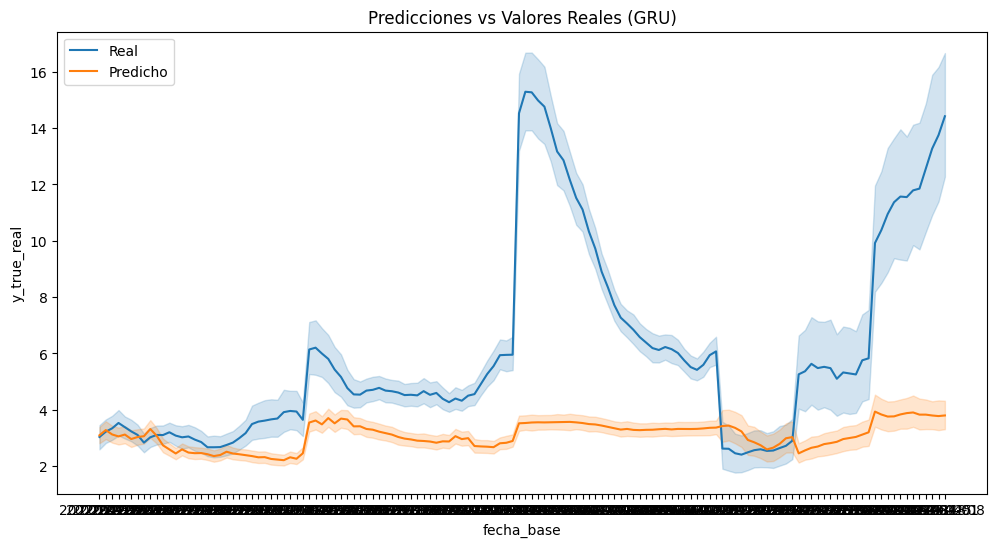
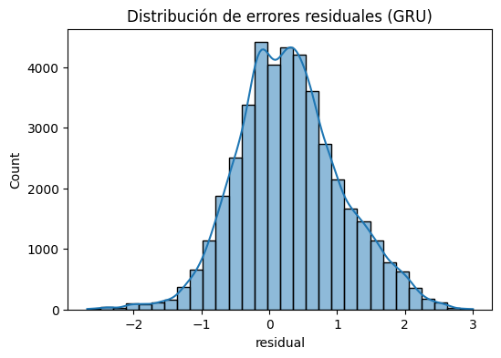
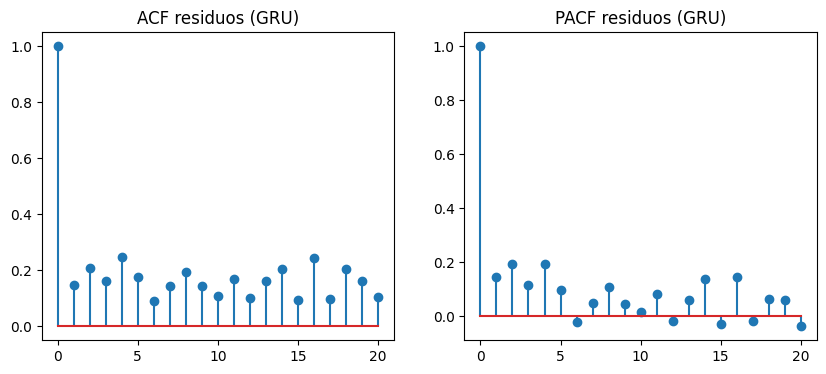
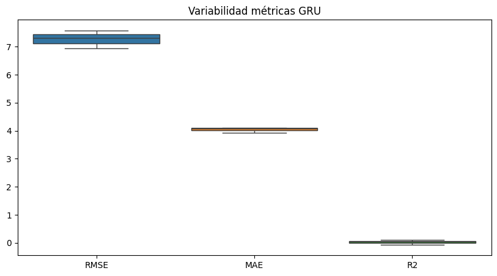
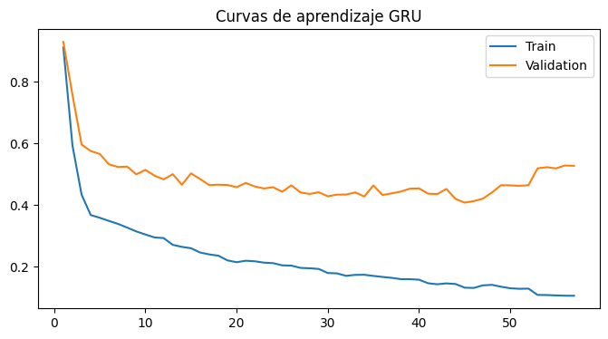
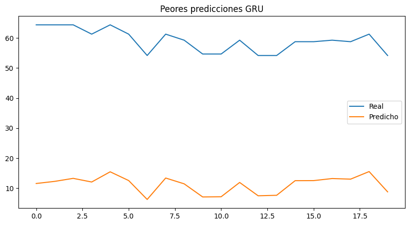

7. GRU#
7.1. Librerias#
import os
import copy
import random
import optuna
import numpy as np
import pandas as pd
import matplotlib.pyplot as plt
import seaborn as sns
from scipy.stats import ttest_rel, wilcoxon
from statsmodels.stats.diagnostic import acorr_ljungbox
from statsmodels.tsa.stattools import acf, pacf
from sklearn.metrics import mean_squared_error, mean_absolute_error, r2_score
from sklearn.preprocessing import RobustScaler
from sklearn.metrics import (
mean_squared_error,
mean_absolute_error,
r2_score
)
import torch
import torch.nn as nn
import torch.nn.functional as F
from torch.utils.data import (
Dataset,
DataLoader
)
import geopandas as gpd
from libpysal.weights import Queen
import sys
import time
7.2. Configuración Reproducibilidad#
SEEDS = [42, 123, 2024]
DEVICE = torch.device(
"cuda" if torch.cuda.is_available()
else "cpu"
)
print("DEVICE:", DEVICE)
if torch.cuda.is_available():
print("GPU:", torch.cuda.get_device_name(0))
print("Python:", sys.version)
print("Torch:", torch.__version__)
print("Numpy:", np.__version__)
print("Pandas:", pd.__version__)
DEVICE: cuda
GPU: NVIDIA GeForce RTX 5050 Laptop GPU
Python: 3.10.20 (main, Mar 3 2026, 09:24:47) [GCC 13.3.0]
Torch: 2.11.0+cu130
Numpy: 2.2.6
Pandas: 2.3.3
El entorno de ejecución utiliza PyTorch 2.11 con soporte CUDA 13.0 y una GPU NVIDIA GeForce RTX 5050 Laptop, lo que permite acelerar significativamente el entrenamiento de modelos de deep learning. Además, la configuración de semillas múltiples y versiones recientes de librerías como NumPy y Pandas favorece la reproducibilidad y estabilidad experimental.
def set_seed(seed=42):
random.seed(seed)
np.random.seed(seed)
torch.manual_seed(seed)
torch.cuda.manual_seed(seed)
torch.cuda.manual_seed_all(seed)
torch.backends.cudnn.deterministic = True
torch.backends.cudnn.benchmark = False
torch.use_deterministic_algorithms(True)
os.environ["PYTHONHASHSEED"] = str(seed)
print(f"Seed fijada: {seed}")
def seed_worker(worker_id):
worker_seed = torch.initial_seed() % 2**32
np.random.seed(worker_seed)
random.seed(worker_seed)
g = torch.Generator()
Este código implementa una estrategia exhaustiva de reproducibilidad en experimentos con PyTorch, fijando semillas en random, numpy y torch, además de desactivar optimizaciones no deterministas de CUDA (como cudnn.benchmark) para garantizar resultados consistentes entre ejecuciones. Asimismo, se controla la aleatoriedad en los data loaders mediante seed_worker y un generador de PyTorch, asegurando coherencia en el muestreo paralelo de datos.
7.3. Carga de Datos & Preprocesamiento#
7.3.1. Carga de Datos#
df = pd.read_csv("/home/guirlessa/Dl_Proyecto_Dengue/Bases_Datos/df_full.csv")
df.head()
| departamento | fecha_inicio | ano | semana | casos | casos_mujeres | casos_hombres | casos_rural | casos_urbano | (0_5] | ... | precip_lag_12 | precip_lag_20 | temp_c | temp_lag_1 | temp_lag_2 | temp_lag_3 | temp_lag_4 | temp_lag_8 | temp_lag_12 | temp_lag_20 | |
|---|---|---|---|---|---|---|---|---|---|---|---|---|---|---|---|---|---|---|---|---|---|
| 0 | Amazonas | 2012-01-02 | 2012 | 1 | 0.0 | 0 | 0 | 0 | 0 | 0 | ... | 50.983546 | 39.108242 | 24.848668 | 24.890654 | 24.334752 | 24.545618 | 25.345678 | 25.278160 | 25.874930 | 24.364443 |
| 1 | Amazonas | 2012-01-09 | 2012 | 2 | 0.0 | 0 | 0 | 0 | 0 | 0 | ... | 61.818291 | 62.830250 | 24.729721 | 24.848668 | 24.890654 | 24.334752 | 24.545618 | 25.084141 | 25.495665 | 24.971798 |
| 2 | Amazonas | 2012-01-16 | 2012 | 3 | 0.0 | 0 | 0 | 0 | 0 | 0 | ... | 24.950393 | 42.988018 | 24.638674 | 24.729721 | 24.848668 | 24.890654 | 24.334752 | 25.751070 | 25.760539 | 25.304947 |
| 3 | Amazonas | 2012-01-23 | 2012 | 4 | 0.0 | 0 | 0 | 0 | 0 | 0 | ... | 88.169343 | 56.572467 | 25.164008 | 24.638674 | 24.729721 | 24.848668 | 24.890654 | 25.284157 | 25.842089 | 25.166142 |
| 4 | Amazonas | 2012-01-30 | 2012 | 5 | 0.0 | 0 | 0 | 0 | 0 | 0 | ... | 56.271440 | 74.893047 | 24.604644 | 25.164008 | 24.638674 | 24.729721 | 24.848668 | 25.345678 | 25.278160 | 25.312395 |
5 rows × 54 columns
print("El dataframe tiene {0} filas y {1} columnas.".format(df.shape[0], df.shape[1]))
El dataframe tiene 21664 filas y 54 columnas.
df.info()
<class 'pandas.core.frame.DataFrame'>
RangeIndex: 21664 entries, 0 to 21663
Data columns (total 54 columns):
# Column Non-Null Count Dtype
--- ------ -------------- -----
0 departamento 21664 non-null object
1 fecha_inicio 21664 non-null object
2 ano 21664 non-null int64
3 semana 21664 non-null int64
4 casos 21664 non-null float64
5 casos_mujeres 21664 non-null int64
6 casos_hombres 21664 non-null int64
7 casos_rural 21664 non-null int64
8 casos_urbano 21664 non-null int64
9 (0_5] 21664 non-null int64
10 (5_13] 21664 non-null int64
11 (13_26] 21664 non-null int64
12 (26_60] 21664 non-null int64
13 60_mas 21664 non-null int64
14 casos_Contributivo 21664 non-null int64
15 casos_No_asegurado 21664 non-null int64
16 casos_Subsidiado 21664 non-null int64
17 poblacion 21664 non-null float64
18 poblacion_rural 21664 non-null float64
19 poblacion_urbana 21664 non-null float64
20 prop_rural 21664 non-null float64
21 prop_urbana 21664 non-null float64
22 incidencia 21664 non-null float64
23 inc_lag_1 21664 non-null float64
24 inc_lag_2 21664 non-null float64
25 inc_lag_3 21664 non-null float64
26 inc_lag_4 21664 non-null float64
27 inc_lag_8 21664 non-null float64
28 inc_lag_12 21664 non-null float64
29 inc_lag_20 21664 non-null float64
30 humedad_relativa 21664 non-null float64
31 humedad_lag_1 21664 non-null float64
32 humedad_lag_2 21664 non-null float64
33 humedad_lag_3 21664 non-null float64
34 humedad_lag_4 21664 non-null float64
35 humedad_lag_8 21664 non-null float64
36 humedad_lag_12 21664 non-null float64
37 humedad_lag_20 21664 non-null float64
38 precipitacion 21664 non-null float64
39 precip_lag_1 21664 non-null float64
40 precip_lag_2 21664 non-null float64
41 precip_lag_3 21664 non-null float64
42 precip_lag_4 21664 non-null float64
43 precip_lag_8 21664 non-null float64
44 precip_lag_12 21664 non-null float64
45 precip_lag_20 21664 non-null float64
46 temp_c 21664 non-null float64
47 temp_lag_1 21664 non-null float64
48 temp_lag_2 21664 non-null float64
49 temp_lag_3 21664 non-null float64
50 temp_lag_4 21664 non-null float64
51 temp_lag_8 21664 non-null float64
52 temp_lag_12 21664 non-null float64
53 temp_lag_20 21664 non-null float64
dtypes: float64(38), int64(14), object(2)
memory usage: 8.9+ MB
Se observa que la variable fecha_inicio está tipificada como object, cuando en realidad debería corresponder al tipo datetime. Por ello, se procederá a realizar la conversión adecuada para garantizar un manejo correcto de fechas en las etapas posteriores de modelado.
df["fecha_inicio"] = pd.to_datetime(df["fecha_inicio"])
También se procede a organizar los registros del DataFrame según el departamento y la fecha de inicio, con el objetivo de asegurar una estructura temporal coherente que facilite el análisis y el posterior proceso de modelado.
df = df.sort_values(
["departamento", "fecha_inicio"]
).reset_index(drop=True)
7.3.2. Feature Enginering#
Con el fin de incorporar la estacionalidad anual de la enfermedad, se construyeron las variables cíclicas week_sin y week_cos a partir de la semana epidemiológica normalizada. Esta transformación permite representar la naturaleza periódica del calendario, preservando la continuidad entre el final y el inicio de cada año, y facilitando que los modelos capturen patrones estacionales recurrentes asociados a la transmisión del dengue.
weeks_per_year = df.groupby("ano")["semana"].transform("max")
df["week_norm"] = df["semana"] / weeks_per_year
df["week_sin"] = np.sin(2 * np.pi * df["week_norm"])
df["week_cos"] = np.cos(2 * np.pi * df["week_norm"])
Este conjunto de FEATURES define el espacio de variables utilizado para el modelado, combinando información temporal, climática y sociodemográfica. En particular, se incorporan múltiples rezagos (lags) de la incidencia y variables meteorológicas (temperatura, humedad y precipitación) para capturar dependencias temporales y efectos retardados, junto con variables estructurales como población y proporción rural. Adicionalmente, las componentes cíclicas week_sin y week_cos permiten modelar la estacionalidad semanal de forma continua, evitando discontinuidades propias de una codificación directa del tiempo.
FEATURES = [
"inc_lag_1",
"inc_lag_2",
"inc_lag_3",
"inc_lag_4",
"inc_lag_8",
"inc_lag_12",
"inc_lag_20",
"temp_lag_1",
"temp_lag_2",
"temp_lag_4",
"temp_lag_8",
"temp_lag_12",
"temp_lag_20",
"humedad_lag_1",
"humedad_lag_2",
"humedad_lag_4",
"humedad_lag_8",
"humedad_lag_12",
"humedad_lag_20",
"precip_lag_1",
"precip_lag_2",
"precip_lag_4",
"precip_lag_8",
"precip_lag_12",
"precip_lag_20",
"poblacion",
"prop_rural",
"week_sin",
"week_cos"
]
Asimismo, durante el análisis exploratorio de datos se observó que la variable de incidencia presentaba una distribución fuertemente asimétrica hacia la derecha, caracterizada por la presencia de valores extremos asociados a periodos epidémicos. Debido a ello, se consideró necesario aplicar una transformación logarítmica con el objetivo de reducir la asimetría, estabilizar la varianza y facilitar que los modelos capturen de manera más adecuada la estructura temporal y los patrones subyacentes de la incidencia del dengue.
df["incidencia_log"] = np.log1p(df["incidencia"])
TARGET = "incidencia_log"
Con el fin de evaluar el efecto de la transformación logarítmica, se compararon las distribuciones de la incidencia antes y después del preprocesamiento. La distribución original presentaba una marcada asimetría positiva y una alta concentración de valores extremos asociados a periodos epidémicos. Tras aplicar la transformación logarítmica (log1p), se observó una reducción significativa del sesgo y una distribución más equilibrada, lo que contribuye a estabilizar la varianza y facilita la identificación de patrones temporales por parte de los modelos predictivos.
fig, axes = plt.subplots(1, 2, figsize=(14, 5))
sns.histplot(
df["incidencia"],
kde=True,
ax=axes[0]
)
axes[0].set_title("Incidencia Original")
sns.histplot(
np.log1p(df["incidencia"]),
kde=True,
ax=axes[1]
)
axes[1].set_title("Incidencia Transformada (log1p)")
plt.tight_layout()
plt.show()
fig, axes = plt.subplots(1, 2, figsize=(12, 5))
sns.boxplot(y=df["incidencia"], ax=axes[0])
axes[0].set_title("Original")
sns.boxplot(y=np.log1p(df["incidencia"]), ax=axes[1])
axes[1].set_title("Log1p")
plt.tight_layout()
plt.show()


NUM_NODES = df["departamento"].nunique()
7.3.3. Normalización de los Datos#
Se plantea la función scale_data con el fin de aplicar una normalización robusta (RobustScaler) a los datos de entrenamiento y validación, para así preservar la estructura original de series temporales multivariadas. Para ello, primero reestructura los tensores a dos dimensiones para ajustar el escalador únicamente sobre el conjunto de entrenamiento, evitando data leakage, y luego transforma ambos conjuntos antes de devolverlos a su forma original.
def scale_data(X_train, X_val):
scaler = RobustScaler()
_, _, _, n_features = X_train.shape
X_train_2d = X_train.reshape(-1, n_features)
scaler.fit(X_train_2d)
X_train_scaled = scaler.transform(X_train_2d).reshape(X_train.shape)
X_val_scaled = scaler.transform(
X_val.reshape(-1, n_features)
).reshape(X_val.shape)
return X_train_scaled, X_val_scaled, scaler
7.4. Esquema de validación temporal#
Se implementa un esquema de validación cruzada temporal anidada (nested time series cross-validation), en el cual los datos se dividen respetando estrictamente el orden cronológico para evitar data leakage. En el nivel externo, se definen particiones de entrenamiento y prueba por año (2022–2024), simulando un escenario real de predicción futura; mientras que en el nivel interno, el conjunto de entrenamiento se subdivide nuevamente en conjuntos de entrenamiento y validación (2019–2021) para ajuste de hiperparámetros y selección de modelos. Este enfoque garantiza una evaluación más robusta y realista al emular la dinámica de predicción en series temporales.
def create_outer_folds(df, date_col="fecha_inicio"):
folds = []
outer_years = [2022, 2023, 2024]
for test_year in outer_years:
train_df = df[df[date_col].dt.year < test_year].copy()
test_df = df[df[date_col].dt.year == test_year].copy()
folds.append({
"test_year": test_year,
"train_df": train_df,
"test_df": test_df
})
return folds
outer_folds = create_outer_folds(df)
def create_inner_folds(train_df, val_years=[2019, 2020, 2021]):
inner_folds = []
for val_year in val_years:
inner_train = train_df[
train_df["fecha_inicio"].dt.year < val_year
].copy()
inner_val = train_df[
train_df["fecha_inicio"].dt.year == val_year
].copy()
inner_folds.append({
"val_year": val_year,
"inner_train": inner_train,
"inner_val": inner_val
})
return inner_folds
7.5. Construcción de Ventanas de Tiempo#
Esta función implementa la construcción del conjunto de datos supervisado para modelado espaciotemporal, mediante la transformación de datos tabulares en tensores estructurados compatibles con arquitecturas de aprendizaje profundo. En primer lugar, reorganiza las variables explicativas y la variable objetivo a través de tablas pivote indexadas por fecha y departamento, asegurando consistencia en la representación espacial. Posteriormente, se unifican las variables en un tensor multivariado y se genera una estructura de secuencias mediante una estrategia de ventanas deslizantes (sliding window), en la que se define explícitamente un historial de observación (window_size) y un horizonte de predicción (horizon). Finalmente, se preserva información auxiliar como las fechas de referencia y el orden de los departamentos, lo cual es fundamental para mantener la coherencia temporal y espacial del conjunto de datos.
def create_windows(
df,
features,
target,
window_size=12,
horizon=4
):
pivot_features = []
for feat in features:
pivot = df.pivot_table(
index="fecha_inicio",
columns="departamento",
values=feat
).sort_index()
pivot_features.append(pivot)
dept_order = pivot_features[0].columns.tolist()
pivot_features = [
pf[dept_order].values for pf in pivot_features
]
X_all = np.stack(pivot_features, axis=-1)
target_pivot = df.pivot_table(
index="fecha_inicio",
columns="departamento",
values=target
).sort_index()
target_pivot = target_pivot[dept_order]
y_all = target_pivot.values
dates = target_pivot.index.values
X, y, base_dates = [], [], []
total_steps = len(dates)
for i in range(total_steps - window_size - horizon + 1):
X.append(X_all[i : i + window_size])
y.append(y_all[i + window_size : i + window_size + horizon])
base_dates.append(dates[i + window_size - 1])
X = np.array(X, dtype=np.float32)
y = np.array(y, dtype=np.float32)
base_dates = np.array(base_dates)
return X, y, base_dates, dept_order
7.6. Funciones para el Modelado#
La clase EarlyStopping introduce un mecanismo de regularización basado en la detención anticipada del entrenamiento cuando la pérdida de validación deja de mejorar durante un número determinado de épocas (patience), lo cual ayuda a prevenir sobreajuste.
class EarlyStopping:
def __init__(self, patience=20):
self.patience = patience
self.best_loss = np.inf
self.counter = 0
self.stop = False
def step(self, val_loss):
if val_loss < self.best_loss:
self.best_loss = val_loss
self.counter = 0
else:
self.counter += 1
if self.counter >= self.patience:
self.stop = True
Por otro lado, train_one_epoch y validate_one_epoch definen los ciclos estándar de entrenamiento y evaluación por época, respectivamente: la primera realiza la optimización del modelo mediante retropropagación del error, actualización de parámetros y recorte de gradientes para estabilizar el aprendizaje, mientras que la segunda evalúa el desempeño del modelo en modo inferencia sin actualización de pesos, permitiendo monitorear su generalización.
def train_one_epoch(model, dataloader, criterion, optimizer, device):
model.train()
total_loss = 0
for X_batch, y_batch in dataloader:
X_batch = X_batch.to(device)
y_batch = y_batch.to(device)
optimizer.zero_grad()
pred = model(X_batch)
loss = criterion(pred, y_batch)
loss.backward()
nn.utils.clip_grad_norm_(model.parameters(), 1.0)
optimizer.step()
total_loss += loss.item()
return total_loss / len(dataloader)
def validate_one_epoch(model, dataloader, criterion, device):
model.eval()
total_loss = 0
with torch.no_grad():
for X_batch, y_batch in dataloader:
X_batch = X_batch.to(device)
y_batch = y_batch.to(device)
pred = model(X_batch)
loss = criterion(pred, y_batch)
total_loss += loss.item()
return total_loss / len(dataloader)
3.7. Arquitectura#
class GRUDataset(Dataset):
def __init__(self, X, y):
self.X = torch.tensor(X, dtype=torch.float32)
self.y = torch.tensor(y, dtype=torch.float32)
def __len__(self):
return len(self.X)
def __getitem__(self, idx):
return self.X[idx], self.y[idx]
class GRU(nn.Module):
def __init__(
self,
num_nodes,
in_channels,
hidden_size=64,
num_layers=2,
horizon=4,
dropout=0.1
):
super().__init__()
self.num_nodes = num_nodes
self.horizon = horizon
self.hidden_size = hidden_size
self.gru = nn.GRU(
input_size=num_nodes * in_channels,
hidden_size=hidden_size,
num_layers=num_layers,
batch_first=True,
dropout=dropout if num_layers > 1 else 0.0
)
self.dropout = nn.Dropout(dropout)
self.fc = nn.Sequential(
nn.Linear(hidden_size, hidden_size),
nn.ReLU(),
nn.Linear(hidden_size, horizon * num_nodes)
)
def forward(self, x, adj=None):
batch, T, nodes, feats = x.shape
x = x.reshape(batch, T, nodes * feats)
out, _ = self.gru(x)
last = out[:, -1, :]
last = self.dropout(last)
out = self.fc(last)
out = out.reshape(batch, self.horizon, self.num_nodes)
return out
7.8. Optimización de Hiperparametros#
Inicializamos el entorno experimental del pipeline de optimización y evaluación del modelo, definiendo estructuras globales para almacenar resultados de múltiples etapas del experimento (tuning, validación cruzada, entrenamiento y evaluación final).
ALL_OPTUNA_TRIALS = []
ALL_OPTUNA_FOLDS = []
ALL_RESIDUALS = []
ALL_INFERENCE_TIME = []
ALL_BEST_PARAMS = []
ALL_RESULTS = []
ALL_PREDICTIONS = []
ALL_LOSSES = []
TUNING_DF = df[df["fecha_inicio"].dt.year < 2022].copy()
INNER_FOLDS_TUNING = create_inner_folds(
TUNING_DF,
val_years=[2019, 2020, 2021]
)
Ahora, definimos objetivo de optimización para el ajuste de hiperparámetros mediante Optuna, evaluando distintas configuraciones del modelo GRU. Para cada trial, se muestrean hiperparámetros como tamaño de ventana, tasa de aprendizaje, tamaño de lote, número de capas, unidades ocultas y dropout, y se evalúan mediante validación cruzada en los inner folds. En cada partición se entrena el modelo, se aplica early stopping y se calcula el RMSE sobre el conjunto de validación, retornando finalmente el error promedio como métrica a minimizar.
def objective(trial):
window_size = trial.suggest_categorical("window_size", [4, 8, 12, 16])
learning_rate = trial.suggest_float("learning_rate", 1e-4, 1e-2, log=True)
batch_size = trial.suggest_categorical("batch_size", [16, 32])
hidden_size = trial.suggest_categorical("hidden_size", [32, 64, 128])
num_layers = trial.suggest_int("num_layers", 1, 3)
dropout = trial.suggest_float("dropout", 0.0, 0.4, step=0.1)
rmse_folds = []
fold_errors = []
for fold_id, fold in enumerate(INNER_FOLDS_TUNING):
X_train, y_train, _, _ = create_windows(
fold["inner_train"], FEATURES, TARGET, window_size, 4
)
X_val, y_val, _, _ = create_windows(
fold["inner_val"], FEATURES, TARGET, window_size, 4
)
X_train_scaled, X_val_scaled, _ = scale_data(X_train, X_val)
train_loader = DataLoader(
GRUDataset(X_train_scaled, y_train),
batch_size=batch_size,
shuffle=False
)
val_loader = DataLoader(
GRUDataset(X_val_scaled, y_val),
batch_size=batch_size,
shuffle=False
)
model = GRU(
num_nodes=NUM_NODES,
in_channels=len(FEATURES),
hidden_size=hidden_size,
num_layers=num_layers,
horizon=4,
dropout=dropout
).to(DEVICE)
optimizer = torch.optim.Adam(model.parameters(), lr=learning_rate)
criterion = nn.MSELoss()
early_stopping = EarlyStopping(patience=10)
for epoch in range(50):
train_one_epoch(model, train_loader, criterion, optimizer, DEVICE)
val_loss = validate_one_epoch(model, val_loader, criterion, DEVICE)
early_stopping.step(val_loss)
if early_stopping.stop:
break
model.eval()
preds, trues = [], []
with torch.no_grad():
for X_batch, y_batch in val_loader:
pred = model(X_batch.to(DEVICE))
preds.append(pred.cpu().numpy())
trues.append(y_batch.numpy())
preds = np.concatenate(preds)
trues = np.concatenate(trues)
rmse = np.sqrt(mean_squared_error(trues.flatten(), preds.flatten()))
rmse_folds.append(rmse)
fold_errors.append({
"trial": trial.number,
"seed": seed,
"fold": fold_id,
"rmse": rmse
})
rmse_mean = np.mean(rmse_folds)
return rmse_mean
7.9. Pipeline Train, Validation & Test#
Ahora se procede a ejecutar el ciclo completo de entrenamiento, optimización y evaluación del modelo GRU bajo un esquema de validación cruzada temporal anidada. En este proceso, se realiza la búsqueda de hiperparámetros mediante Optuna para cada semilla, seguida del entrenamiento del modelo en los outer folds utilizando la mejor configuración obtenida. Finalmente, se evalúa el desempeño en el conjunto de prueba mediante métricas de error, registrando adicionalmente tiempos de entrenamiento e inferencia, así como predicciones y residuos para su análisis detallado posterior.
for seed in SEEDS:
print("\n")
print("="*100)
print(f"SEED {seed}")
print("="*100)
set_seed(seed)
sampler = optuna.samplers.TPESampler(seed=seed)
study = optuna.create_study(
direction="minimize",
sampler=sampler
)
study.optimize(objective, n_trials=30)
best_params = study.best_trial.params
print(f"\nMejores hiperparámetros para seed {seed}:")
print(best_params)
pd.DataFrame([{"seed": seed, **best_params}]).to_csv(
f"/home/guirlessa/Dl_Proyecto_Dengue/Modelos/GRU/GRU_best_params_seed_{seed}.csv",
index=False
)
ALL_BEST_PARAMS.append({"seed": seed, **best_params})
for outer_idx, outer_fold in enumerate(outer_folds):
print("\n")
print("="*100)
print(f"OUTER FOLD {outer_idx+1} | Test year: {outer_fold['test_year']}")
print("="*100)
outer_train_df = outer_fold["train_df"]
final_test_df = outer_fold["test_df"]
window_size = best_params["window_size"]
hidden_size = best_params["hidden_size"]
num_layers = best_params["num_layers"]
dropout = best_params["dropout"]
learning_rate = best_params["learning_rate"]
batch_size = best_params["batch_size"]
val_year = outer_train_df["fecha_inicio"].dt.year.max()
final_train_df = outer_train_df[
outer_train_df["fecha_inicio"].dt.year < val_year
]
final_val_df = outer_train_df[
outer_train_df["fecha_inicio"].dt.year == val_year
]
X_train, y_train, train_dates, dept_order = create_windows(
final_train_df, FEATURES, TARGET, window_size, 4
)
idx_to_dept = {i: d for i, d in enumerate(dept_order)}
dept_to_idx = {d: i for i, d in enumerate(dept_order)}
X_val, y_val, val_dates, _ = create_windows(
final_val_df, FEATURES, TARGET, window_size, 4
)
X_test, y_test, test_dates, _ = create_windows(
final_test_df, FEATURES, TARGET, window_size, 4
)
X_train_scaled, X_val_scaled, scaler = scale_data(X_train, X_val)
X_test_scaled = scaler.transform(
X_test.reshape(-1, X_test.shape[-1])
).reshape(X_test.shape)
train_dataset = GRUDataset(X_train_scaled, y_train)
val_dataset = GRUDataset(X_val_scaled, y_val)
test_dataset = GRUDataset(X_test_scaled, y_test)
train_loader = DataLoader(train_dataset, batch_size=batch_size, shuffle=False)
val_loader = DataLoader(val_dataset, batch_size=batch_size, shuffle=False)
test_loader = DataLoader(test_dataset, batch_size=batch_size, shuffle=False)
model = GRU(
num_nodes=NUM_NODES,
in_channels=len(FEATURES),
hidden_size=hidden_size,
num_layers=num_layers,
horizon=4,
dropout=dropout
).to(DEVICE)
criterion = nn.MSELoss()
optimizer = torch.optim.Adam(
model.parameters(),
lr=learning_rate
)
scheduler = torch.optim.lr_scheduler.ReduceLROnPlateau(
optimizer, mode="min", factor=0.5, patience=10
)
early_stopping = EarlyStopping(patience=20)
best_model = None
best_loss = np.inf
total_train_time = 0.0
for epoch in range(300):
start_epoch = time.time()
train_loss = train_one_epoch(
model, train_loader, criterion, optimizer, DEVICE
)
val_loss = validate_one_epoch(
model, val_loader, criterion, DEVICE
)
scheduler.step(val_loss)
epoch_time = time.time() - start_epoch
total_train_time += epoch_time
print(
f"Epoch {epoch+1}"
f" | Train {train_loss:.4f}"
f" | Val {val_loss:.4f}"
f" | Time {epoch_time:.2f}s"
)
ALL_LOSSES.append({
"seed": seed,
"outer_fold": outer_idx + 1,
"test_year": outer_fold["test_year"],
"epoch": epoch + 1,
"train_loss": train_loss,
"val_loss": val_loss,
"epoch_time": epoch_time
})
if val_loss < best_loss:
best_loss = val_loss
best_model = copy.deepcopy(model)
early_stopping.step(val_loss)
if early_stopping.stop:
break
model = best_model
torch.save(
model.state_dict(),
f"/home/guirlessa/Dl_Proyecto_Dengue/Modelos/GRU/"
f"gru_seed_{seed}_outer_fold_{outer_idx+1}.pt"
)
model.eval()
start_inference = time.time()
predictions = []
targets = []
with torch.no_grad():
for X_batch, y_batch in test_loader:
X_batch = X_batch.to(DEVICE)
pred = model(X_batch.to(DEVICE))
predictions.append(pred.cpu().numpy())
targets.append(y_batch.numpy())
inference_time = time.time() - start_inference
predictions = np.concatenate(predictions)
targets = np.concatenate(targets)
mse = mean_squared_error(targets.flatten(), predictions.flatten())
rmse = np.sqrt(mse)
mae = mean_absolute_error(targets.flatten(), predictions.flatten())
r2 = r2_score(targets.flatten(), predictions.flatten())
ALL_RESULTS.append({
"seed": seed,
"outer_fold": outer_idx + 1,
"test_year": outer_fold["test_year"],
"mse": mse,
"rmse": rmse,
"mae": mae,
"r2": r2,
"train_time": total_train_time,
"inference_time": inference_time
})
ALL_INFERENCE_TIME.append({
"seed": seed,
"outer_fold": outer_idx + 1,
"test_year": outer_fold["test_year"],
"inference_time": inference_time,
"train_time": total_train_time
})
rows = []
for i in range(len(predictions)):
for h in range(4):
for node in range(NUM_NODES):
y_true = targets[i, h, node]
y_pred = predictions[i, h, node]
residual = y_true - y_pred
rows.append({
"seed": seed,
"outer_fold": outer_idx + 1,
"test_year": outer_fold["test_year"],
"departamento": idx_to_dept[node],
"fecha_base": test_dates[i],
"horizonte": h + 1,
"y_true_log": y_true,
"y_pred_log": y_pred,
"y_true_real": np.expm1(y_true),
"y_pred_real": np.expm1(y_pred),
"residual": residual,
"abs_error": abs(residual),
"sq_error": residual ** 2
})
ALL_RESIDUALS.append({
"seed": seed,
"outer_fold": outer_idx + 1,
"test_year": outer_fold["test_year"],
"departamento": idx_to_dept[node],
"fecha_base": test_dates[i],
"horizonte": h + 1,
"residual": residual
})
ALL_PREDICTIONS.append(pd.DataFrame(rows))
====================================================================================================
SEED 42
====================================================================================================
[I 2026-06-02 09:37:57,367] A new study created in memory with name: no-name-08a7fbe9-0821-46be-b57d-abce24e74929
Seed fijada: 42
[I 2026-06-02 09:38:12,943] Trial 0 finished with value: 0.7113001584851767 and parameters: {'window_size': 8, 'learning_rate': 0.0002051338263087451, 'batch_size': 16, 'hidden_size': 32, 'num_layers': 1, 'dropout': 0.4}. Best is trial 0 with value: 0.7113001584851767.
[I 2026-06-02 09:38:25,104] Trial 1 finished with value: 0.6671023923047255 and parameters: {'window_size': 4, 'learning_rate': 0.0004059611610484307, 'batch_size': 16, 'hidden_size': 64, 'num_layers': 1, 'dropout': 0.1}. Best is trial 1 with value: 0.6671023923047255.
[I 2026-06-02 09:38:30,542] Trial 2 finished with value: 0.7116102648538373 and parameters: {'window_size': 8, 'learning_rate': 0.0015304852121831463, 'batch_size': 32, 'hidden_size': 128, 'num_layers': 3, 'dropout': 0.4}. Best is trial 1 with value: 0.6671023923047255.
[I 2026-06-02 09:38:45,879] Trial 3 finished with value: 0.6887330004574487 and parameters: {'window_size': 12, 'learning_rate': 0.00017541893487450815, 'batch_size': 16, 'hidden_size': 32, 'num_layers': 1, 'dropout': 0.2}. Best is trial 1 with value: 0.6671023923047255.
[I 2026-06-02 09:38:56,164] Trial 4 finished with value: 0.7145729789439659 and parameters: {'window_size': 12, 'learning_rate': 0.007568292060167618, 'batch_size': 16, 'hidden_size': 32, 'num_layers': 1, 'dropout': 0.1}. Best is trial 1 with value: 0.6671023923047255.
[I 2026-06-02 09:39:07,530] Trial 5 finished with value: 0.6832304707883043 and parameters: {'window_size': 12, 'learning_rate': 0.0003646439558980723, 'batch_size': 16, 'hidden_size': 128, 'num_layers': 3, 'dropout': 0.0}. Best is trial 1 with value: 0.6671023923047255.
[I 2026-06-02 09:39:11,676] Trial 6 finished with value: 0.6897191422241266 and parameters: {'window_size': 8, 'learning_rate': 0.0034877126245459306, 'batch_size': 32, 'hidden_size': 64, 'num_layers': 1, 'dropout': 0.0}. Best is trial 1 with value: 0.6671023923047255.
[I 2026-06-02 09:39:20,771] Trial 7 finished with value: 0.7785660768294423 and parameters: {'window_size': 12, 'learning_rate': 0.0059487468132197715, 'batch_size': 16, 'hidden_size': 64, 'num_layers': 3, 'dropout': 0.2}. Best is trial 1 with value: 0.6671023923047255.
[I 2026-06-02 09:39:35,855] Trial 8 finished with value: 0.6774561177324644 and parameters: {'window_size': 4, 'learning_rate': 0.0001155735281626988, 'batch_size': 16, 'hidden_size': 64, 'num_layers': 2, 'dropout': 0.30000000000000004}. Best is trial 1 with value: 0.6671023923047255.
[I 2026-06-02 09:39:46,370] Trial 9 finished with value: 0.7277634722172802 and parameters: {'window_size': 12, 'learning_rate': 0.007234279845665418, 'batch_size': 16, 'hidden_size': 32, 'num_layers': 3, 'dropout': 0.2}. Best is trial 1 with value: 0.6671023923047255.
[I 2026-06-02 09:39:53,363] Trial 10 finished with value: 0.6550232974527187 and parameters: {'window_size': 4, 'learning_rate': 0.0005451806350972793, 'batch_size': 32, 'hidden_size': 64, 'num_layers': 2, 'dropout': 0.1}. Best is trial 10 with value: 0.6550232974527187.
[I 2026-06-02 09:39:59,600] Trial 11 finished with value: 0.6435790469324271 and parameters: {'window_size': 4, 'learning_rate': 0.0006094046787183485, 'batch_size': 32, 'hidden_size': 64, 'num_layers': 2, 'dropout': 0.1}. Best is trial 11 with value: 0.6435790469324271.
[I 2026-06-02 09:40:07,025] Trial 12 finished with value: 0.6555225233498544 and parameters: {'window_size': 4, 'learning_rate': 0.0008964416390251238, 'batch_size': 32, 'hidden_size': 64, 'num_layers': 2, 'dropout': 0.1}. Best is trial 11 with value: 0.6435790469324271.
[I 2026-06-02 09:40:12,391] Trial 13 finished with value: 0.7041715673550049 and parameters: {'window_size': 16, 'learning_rate': 0.0010425310727888572, 'batch_size': 32, 'hidden_size': 64, 'num_layers': 2, 'dropout': 0.1}. Best is trial 11 with value: 0.6435790469324271.
[I 2026-06-02 09:40:18,768] Trial 14 finished with value: 0.6598824821875794 and parameters: {'window_size': 4, 'learning_rate': 0.0004586546156515066, 'batch_size': 32, 'hidden_size': 64, 'num_layers': 2, 'dropout': 0.0}. Best is trial 11 with value: 0.6435790469324271.
[I 2026-06-02 09:40:23,493] Trial 15 finished with value: 0.7199241936402441 and parameters: {'window_size': 4, 'learning_rate': 0.002384662593321314, 'batch_size': 32, 'hidden_size': 64, 'num_layers': 2, 'dropout': 0.2}. Best is trial 11 with value: 0.6435790469324271.
[I 2026-06-02 09:40:30,326] Trial 16 finished with value: 0.6414054492365753 and parameters: {'window_size': 16, 'learning_rate': 0.0008200719832910103, 'batch_size': 32, 'hidden_size': 128, 'num_layers': 2, 'dropout': 0.30000000000000004}. Best is trial 16 with value: 0.6414054492365753.
[I 2026-06-02 09:40:38,721] Trial 17 finished with value: 0.6424611590498492 and parameters: {'window_size': 16, 'learning_rate': 0.0008105411609296442, 'batch_size': 32, 'hidden_size': 128, 'num_layers': 2, 'dropout': 0.30000000000000004}. Best is trial 16 with value: 0.6414054492365753.
[I 2026-06-02 09:40:43,140] Trial 18 finished with value: 0.7019757253887251 and parameters: {'window_size': 16, 'learning_rate': 0.0019092188648775921, 'batch_size': 32, 'hidden_size': 128, 'num_layers': 3, 'dropout': 0.30000000000000004}. Best is trial 16 with value: 0.6414054492365753.
[I 2026-06-02 09:40:49,907] Trial 19 finished with value: 0.6449802939602499 and parameters: {'window_size': 16, 'learning_rate': 0.0011377470805773726, 'batch_size': 32, 'hidden_size': 128, 'num_layers': 2, 'dropout': 0.30000000000000004}. Best is trial 16 with value: 0.6414054492365753.
[I 2026-06-02 09:40:54,679] Trial 20 finished with value: 0.6853068131886099 and parameters: {'window_size': 16, 'learning_rate': 0.0038035419193067394, 'batch_size': 32, 'hidden_size': 128, 'num_layers': 2, 'dropout': 0.30000000000000004}. Best is trial 16 with value: 0.6414054492365753.
[I 2026-06-02 09:41:00,298] Trial 21 finished with value: 0.6652409224090413 and parameters: {'window_size': 16, 'learning_rate': 0.0006803947118851508, 'batch_size': 32, 'hidden_size': 128, 'num_layers': 2, 'dropout': 0.4}. Best is trial 16 with value: 0.6414054492365753.
[I 2026-06-02 09:41:07,964] Trial 22 finished with value: 0.6536117151338013 and parameters: {'window_size': 16, 'learning_rate': 0.0002511895130896716, 'batch_size': 32, 'hidden_size': 128, 'num_layers': 2, 'dropout': 0.30000000000000004}. Best is trial 16 with value: 0.6414054492365753.
[I 2026-06-02 09:41:15,157] Trial 23 finished with value: 0.6368198435742817 and parameters: {'window_size': 16, 'learning_rate': 0.0007456514906831361, 'batch_size': 32, 'hidden_size': 128, 'num_layers': 2, 'dropout': 0.30000000000000004}. Best is trial 23 with value: 0.6368198435742817.
[I 2026-06-02 09:41:21,205] Trial 24 finished with value: 0.6870006237454085 and parameters: {'window_size': 16, 'learning_rate': 0.0013704497667662654, 'batch_size': 32, 'hidden_size': 128, 'num_layers': 2, 'dropout': 0.30000000000000004}. Best is trial 23 with value: 0.6368198435742817.
[I 2026-06-02 09:41:27,806] Trial 25 finished with value: 0.6567059185940372 and parameters: {'window_size': 16, 'learning_rate': 0.0008566586717176617, 'batch_size': 32, 'hidden_size': 128, 'num_layers': 2, 'dropout': 0.4}. Best is trial 23 with value: 0.6368198435742817.
[I 2026-06-02 09:41:35,679] Trial 26 finished with value: 0.660708507998224 and parameters: {'window_size': 16, 'learning_rate': 0.0003094173948792996, 'batch_size': 32, 'hidden_size': 128, 'num_layers': 1, 'dropout': 0.30000000000000004}. Best is trial 23 with value: 0.6368198435742817.
[I 2026-06-02 09:41:46,391] Trial 27 finished with value: 0.6583377987615998 and parameters: {'window_size': 16, 'learning_rate': 0.0007328727088143937, 'batch_size': 32, 'hidden_size': 128, 'num_layers': 3, 'dropout': 0.4}. Best is trial 23 with value: 0.6368198435742817.
[I 2026-06-02 09:41:53,977] Trial 28 finished with value: 0.7054593430798514 and parameters: {'window_size': 16, 'learning_rate': 0.002378752804411273, 'batch_size': 32, 'hidden_size': 128, 'num_layers': 2, 'dropout': 0.30000000000000004}. Best is trial 23 with value: 0.6368198435742817.
[I 2026-06-02 09:42:02,472] Trial 29 finished with value: 0.6456885724795988 and parameters: {'window_size': 8, 'learning_rate': 0.00019377348036952205, 'batch_size': 32, 'hidden_size': 128, 'num_layers': 1, 'dropout': 0.4}. Best is trial 23 with value: 0.6368198435742817.
Mejores hiperparámetros para seed 42:
{'window_size': 16, 'learning_rate': 0.0007456514906831361, 'batch_size': 32, 'hidden_size': 128, 'num_layers': 2, 'dropout': 0.30000000000000004}
====================================================================================================
OUTER FOLD 1 | Test year: 2022
====================================================================================================
Epoch 1 | Train 0.9303 | Val 0.5939 | Time 0.13s
Epoch 2 | Train 0.4994 | Val 0.4657 | Time 0.13s
Epoch 3 | Train 0.3544 | Val 0.5933 | Time 0.12s
Epoch 4 | Train 0.3637 | Val 0.4632 | Time 0.12s
Epoch 5 | Train 0.3411 | Val 0.5256 | Time 0.10s
Epoch 6 | Train 0.3253 | Val 0.5681 | Time 0.10s
Epoch 7 | Train 0.3541 | Val 0.4602 | Time 0.11s
Epoch 8 | Train 0.3068 | Val 0.5431 | Time 0.10s
Epoch 9 | Train 0.2923 | Val 0.4043 | Time 0.11s
Epoch 10 | Train 0.2639 | Val 0.4055 | Time 0.10s
Epoch 11 | Train 0.2442 | Val 0.4187 | Time 0.09s
Epoch 12 | Train 0.2405 | Val 0.3509 | Time 0.10s
Epoch 13 | Train 0.2256 | Val 0.3774 | Time 0.12s
Epoch 14 | Train 0.2196 | Val 0.4049 | Time 0.11s
Epoch 15 | Train 0.2467 | Val 0.3935 | Time 0.08s
Epoch 16 | Train 0.2119 | Val 0.3658 | Time 0.07s
Epoch 17 | Train 0.2004 | Val 0.3986 | Time 0.07s
Epoch 18 | Train 0.1993 | Val 0.3425 | Time 0.07s
Epoch 19 | Train 0.1826 | Val 0.3984 | Time 0.06s
Epoch 20 | Train 0.1677 | Val 0.3624 | Time 0.06s
Epoch 21 | Train 0.1654 | Val 0.3526 | Time 0.07s
Epoch 22 | Train 0.1622 | Val 0.3747 | Time 0.06s
Epoch 23 | Train 0.1820 | Val 0.3698 | Time 0.06s
Epoch 24 | Train 0.1565 | Val 0.3442 | Time 0.06s
Epoch 25 | Train 0.1512 | Val 0.3913 | Time 0.06s
Epoch 26 | Train 0.1330 | Val 0.3298 | Time 0.05s
Epoch 27 | Train 0.1389 | Val 0.3971 | Time 0.07s
Epoch 28 | Train 0.1273 | Val 0.3607 | Time 0.06s
Epoch 29 | Train 0.1271 | Val 0.3777 | Time 0.06s
Epoch 30 | Train 0.1189 | Val 0.3695 | Time 0.07s
Epoch 31 | Train 0.1250 | Val 0.3772 | Time 0.08s
Epoch 32 | Train 0.1173 | Val 0.3530 | Time 0.09s
Epoch 33 | Train 0.1222 | Val 0.4294 | Time 0.07s
Epoch 34 | Train 0.1460 | Val 0.3493 | Time 0.07s
Epoch 35 | Train 0.1553 | Val 0.4493 | Time 0.07s
Epoch 36 | Train 0.1395 | Val 0.3602 | Time 0.07s
Epoch 37 | Train 0.1196 | Val 0.4015 | Time 0.06s
Epoch 38 | Train 0.1081 | Val 0.3639 | Time 0.06s
Epoch 39 | Train 0.1023 | Val 0.3663 | Time 0.07s
Epoch 40 | Train 0.0990 | Val 0.3734 | Time 0.06s
Epoch 41 | Train 0.0985 | Val 0.3681 | Time 0.06s
Epoch 42 | Train 0.0985 | Val 0.3627 | Time 0.06s
Epoch 43 | Train 0.0975 | Val 0.3622 | Time 0.06s
Epoch 44 | Train 0.0970 | Val 0.3636 | Time 0.06s
Epoch 45 | Train 0.0959 | Val 0.3584 | Time 0.07s
Epoch 46 | Train 0.0958 | Val 0.3550 | Time 0.08s
====================================================================================================
OUTER FOLD 2 | Test year: 2023
====================================================================================================
/home/guirlessa/tf_gpu/lib/python3.10/site-packages/torch/nn/modules/rnn.py:1449: UserWarning: RNN module weights are not part of single contiguous chunk of memory. This means they need to be compacted at every call, possibly greatly increasing memory usage. To compact weights again call flatten_parameters(). (Triggered internally at /pytorch/aten/src/ATen/native/cudnn/RNN.cpp:1479.)
result = _VF.gru(
Epoch 1 | Train 0.9495 | Val 0.9551 | Time 0.11s
Epoch 2 | Train 0.5399 | Val 0.6455 | Time 0.10s
Epoch 3 | Train 0.3689 | Val 0.5947 | Time 0.10s
Epoch 4 | Train 0.3442 | Val 0.5247 | Time 0.12s
Epoch 5 | Train 0.3426 | Val 0.5477 | Time 0.12s
Epoch 6 | Train 0.3075 | Val 0.5082 | Time 0.11s
Epoch 7 | Train 0.2895 | Val 0.4820 | Time 0.10s
Epoch 8 | Train 0.2936 | Val 0.4568 | Time 0.10s
Epoch 9 | Train 0.2766 | Val 0.4204 | Time 0.10s
Epoch 10 | Train 0.2518 | Val 0.4412 | Time 0.11s
Epoch 11 | Train 0.2385 | Val 0.4040 | Time 0.10s
Epoch 12 | Train 0.2186 | Val 0.3996 | Time 0.09s
Epoch 13 | Train 0.2049 | Val 0.4518 | Time 0.09s
Epoch 14 | Train 0.2145 | Val 0.3919 | Time 0.08s
Epoch 15 | Train 0.2201 | Val 0.4879 | Time 0.07s
Epoch 16 | Train 0.1896 | Val 0.4297 | Time 0.06s
Epoch 17 | Train 0.1731 | Val 0.4201 | Time 0.07s
Epoch 18 | Train 0.1835 | Val 0.4427 | Time 0.07s
Epoch 19 | Train 0.1716 | Val 0.4204 | Time 0.08s
Epoch 20 | Train 0.1733 | Val 0.4956 | Time 0.08s
Epoch 21 | Train 0.2077 | Val 0.4983 | Time 0.07s
Epoch 22 | Train 0.2135 | Val 0.5159 | Time 0.07s
Epoch 23 | Train 0.1815 | Val 0.4374 | Time 0.08s
Epoch 24 | Train 0.1864 | Val 0.4999 | Time 0.08s
Epoch 25 | Train 0.1551 | Val 0.4332 | Time 0.08s
Epoch 26 | Train 0.1391 | Val 0.4215 | Time 0.09s
Epoch 27 | Train 0.1254 | Val 0.4179 | Time 0.09s
Epoch 28 | Train 0.1219 | Val 0.4162 | Time 0.07s
Epoch 29 | Train 0.1194 | Val 0.4196 | Time 0.07s
Epoch 30 | Train 0.1184 | Val 0.4196 | Time 0.07s
Epoch 31 | Train 0.1155 | Val 0.4159 | Time 0.08s
Epoch 32 | Train 0.1139 | Val 0.4141 | Time 0.07s
Epoch 33 | Train 0.1134 | Val 0.4156 | Time 0.06s
Epoch 34 | Train 0.1119 | Val 0.4151 | Time 0.07s
====================================================================================================
OUTER FOLD 3 | Test year: 2024
====================================================================================================
/home/guirlessa/tf_gpu/lib/python3.10/site-packages/torch/nn/modules/rnn.py:1449: UserWarning: RNN module weights are not part of single contiguous chunk of memory. This means they need to be compacted at every call, possibly greatly increasing memory usage. To compact weights again call flatten_parameters(). (Triggered internally at /pytorch/aten/src/ATen/native/cudnn/RNN.cpp:1479.)
result = _VF.gru(
Epoch 1 | Train 0.9137 | Val 1.1701 | Time 0.11s
Epoch 2 | Train 0.5204 | Val 0.9334 | Time 0.14s
Epoch 3 | Train 0.3853 | Val 0.6208 | Time 0.12s
Epoch 4 | Train 0.3665 | Val 0.6847 | Time 0.12s
Epoch 5 | Train 0.3551 | Val 0.6279 | Time 0.11s
Epoch 6 | Train 0.3284 | Val 0.6022 | Time 0.11s
Epoch 7 | Train 0.3123 | Val 0.6022 | Time 0.14s
Epoch 8 | Train 0.3007 | Val 0.5775 | Time 0.14s
Epoch 9 | Train 0.3074 | Val 0.5904 | Time 0.13s
Epoch 10 | Train 0.3269 | Val 0.8190 | Time 0.17s
Epoch 11 | Train 0.3209 | Val 0.6173 | Time 0.19s
Epoch 12 | Train 0.3162 | Val 0.6417 | Time 0.16s
Epoch 13 | Train 0.2621 | Val 0.6859 | Time 0.10s
Epoch 14 | Train 0.2620 | Val 0.5736 | Time 0.10s
Epoch 15 | Train 0.2343 | Val 0.6677 | Time 0.10s
Epoch 16 | Train 0.2171 | Val 0.6332 | Time 0.10s
Epoch 17 | Train 0.2176 | Val 0.5778 | Time 0.10s
Epoch 18 | Train 0.2140 | Val 0.6361 | Time 0.09s
Epoch 19 | Train 0.1936 | Val 0.6089 | Time 0.08s
Epoch 20 | Train 0.1864 | Val 0.5596 | Time 0.07s
Epoch 21 | Train 0.2081 | Val 0.6943 | Time 0.08s
Epoch 22 | Train 0.1937 | Val 0.5758 | Time 0.08s
Epoch 23 | Train 0.1990 | Val 0.5382 | Time 0.08s
Epoch 24 | Train 0.2011 | Val 0.7084 | Time 0.08s
Epoch 25 | Train 0.1818 | Val 0.5728 | Time 0.07s
Epoch 26 | Train 0.1828 | Val 0.6116 | Time 0.07s
Epoch 27 | Train 0.1565 | Val 0.6193 | Time 0.09s
Epoch 28 | Train 0.1566 | Val 0.5683 | Time 0.10s
Epoch 29 | Train 0.1426 | Val 0.5975 | Time 0.10s
Epoch 30 | Train 0.1428 | Val 0.6061 | Time 0.09s
Epoch 31 | Train 0.1372 | Val 0.6229 | Time 0.10s
Epoch 32 | Train 0.1425 | Val 0.5875 | Time 0.10s
Epoch 33 | Train 0.1262 | Val 0.6305 | Time 0.11s
Epoch 34 | Train 0.1258 | Val 0.5650 | Time 0.10s
Epoch 35 | Train 0.1180 | Val 0.6018 | Time 0.10s
Epoch 36 | Train 0.1132 | Val 0.5677 | Time 0.08s
Epoch 37 | Train 0.1102 | Val 0.5855 | Time 0.06s
Epoch 38 | Train 0.1067 | Val 0.5718 | Time 0.08s
Epoch 39 | Train 0.1068 | Val 0.5726 | Time 0.07s
Epoch 40 | Train 0.1063 | Val 0.5758 | Time 0.07s
Epoch 41 | Train 0.1040 | Val 0.5651 | Time 0.10s
Epoch 42 | Train 0.1038 | Val 0.5768 | Time 0.10s
Epoch 43 | Train 0.1020 | Val 0.5631 | Time 0.10s
/home/guirlessa/tf_gpu/lib/python3.10/site-packages/torch/nn/modules/rnn.py:1449: UserWarning: RNN module weights are not part of single contiguous chunk of memory. This means they need to be compacted at every call, possibly greatly increasing memory usage. To compact weights again call flatten_parameters(). (Triggered internally at /pytorch/aten/src/ATen/native/cudnn/RNN.cpp:1479.)
result = _VF.gru(
[I 2026-06-02 09:42:15,745] A new study created in memory with name: no-name-920fe0f6-d4c2-468f-8d7b-a43e3e390c50
====================================================================================================
SEED 123
====================================================================================================
Seed fijada: 123
[I 2026-06-02 09:42:23,459] Trial 0 finished with value: 0.6879457735530065 and parameters: {'window_size': 4, 'learning_rate': 0.0027475015086811214, 'batch_size': 32, 'hidden_size': 32, 'num_layers': 2, 'dropout': 0.30000000000000004}. Best is trial 0 with value: 0.6879457735530065.
[I 2026-06-02 09:42:33,563] Trial 1 finished with value: 0.6732831374309202 and parameters: {'window_size': 16, 'learning_rate': 0.00023173063990755244, 'batch_size': 32, 'hidden_size': 128, 'num_layers': 3, 'dropout': 0.30000000000000004}. Best is trial 1 with value: 0.6732831374309202.
[I 2026-06-02 09:42:44,321] Trial 2 finished with value: 0.7212913513024981 and parameters: {'window_size': 4, 'learning_rate': 0.0003867480144966058, 'batch_size': 16, 'hidden_size': 128, 'num_layers': 2, 'dropout': 0.1}. Best is trial 1 with value: 0.6732831374309202.
[I 2026-06-02 09:42:49,823] Trial 3 finished with value: 0.694515883247233 and parameters: {'window_size': 12, 'learning_rate': 0.0017697254791971563, 'batch_size': 32, 'hidden_size': 64, 'num_layers': 2, 'dropout': 0.4}. Best is trial 1 with value: 0.6732831374309202.
[I 2026-06-02 09:43:06,218] Trial 4 finished with value: 0.7890908262840268 and parameters: {'window_size': 16, 'learning_rate': 0.001607386279172614, 'batch_size': 16, 'hidden_size': 128, 'num_layers': 3, 'dropout': 0.2}. Best is trial 1 with value: 0.6732831374309202.
[I 2026-06-02 09:43:12,510] Trial 5 finished with value: 0.6751176121301196 and parameters: {'window_size': 16, 'learning_rate': 0.004838211787792581, 'batch_size': 32, 'hidden_size': 128, 'num_layers': 1, 'dropout': 0.4}. Best is trial 1 with value: 0.6732831374309202.
[I 2026-06-02 09:43:22,340] Trial 6 finished with value: 0.6950267762996654 and parameters: {'window_size': 8, 'learning_rate': 0.0012988840529683243, 'batch_size': 16, 'hidden_size': 32, 'num_layers': 2, 'dropout': 0.1}. Best is trial 1 with value: 0.6732831374309202.
[I 2026-06-02 09:43:32,084] Trial 7 finished with value: 0.6888947332035323 and parameters: {'window_size': 4, 'learning_rate': 0.000406945402927034, 'batch_size': 32, 'hidden_size': 32, 'num_layers': 2, 'dropout': 0.30000000000000004}. Best is trial 1 with value: 0.6732831374309202.
[I 2026-06-02 09:43:42,987] Trial 8 finished with value: 0.7565948780909854 and parameters: {'window_size': 8, 'learning_rate': 0.0010623223250113558, 'batch_size': 16, 'hidden_size': 128, 'num_layers': 3, 'dropout': 0.2}. Best is trial 1 with value: 0.6732831374309202.
[I 2026-06-02 09:43:53,179] Trial 9 finished with value: 0.6695755133511764 and parameters: {'window_size': 4, 'learning_rate': 0.00021986882646940107, 'batch_size': 16, 'hidden_size': 64, 'num_layers': 1, 'dropout': 0.4}. Best is trial 9 with value: 0.6695755133511764.
[I 2026-06-02 09:44:07,026] Trial 10 finished with value: 0.688628065178559 and parameters: {'window_size': 12, 'learning_rate': 0.00010496338960479247, 'batch_size': 16, 'hidden_size': 64, 'num_layers': 1, 'dropout': 0.0}. Best is trial 9 with value: 0.6695755133511764.
[I 2026-06-02 09:44:12,121] Trial 11 finished with value: 0.6861893755705107 and parameters: {'window_size': 16, 'learning_rate': 0.00018324322425110603, 'batch_size': 32, 'hidden_size': 64, 'num_layers': 3, 'dropout': 0.30000000000000004}. Best is trial 9 with value: 0.6695755133511764.
[I 2026-06-02 09:44:17,807] Trial 12 finished with value: 0.6882614805976909 and parameters: {'window_size': 16, 'learning_rate': 0.00041066669558166444, 'batch_size': 32, 'hidden_size': 64, 'num_layers': 1, 'dropout': 0.4}. Best is trial 9 with value: 0.6695755133511764.
[I 2026-06-02 09:44:27,588] Trial 13 finished with value: 0.6556274477240526 and parameters: {'window_size': 4, 'learning_rate': 0.00021968079218417298, 'batch_size': 16, 'hidden_size': 128, 'num_layers': 3, 'dropout': 0.30000000000000004}. Best is trial 13 with value: 0.6556274477240526.
[I 2026-06-02 09:44:43,101] Trial 14 finished with value: 0.6897371608459619 and parameters: {'window_size': 4, 'learning_rate': 0.00010105201314865843, 'batch_size': 16, 'hidden_size': 64, 'num_layers': 1, 'dropout': 0.4}. Best is trial 13 with value: 0.6556274477240526.
[I 2026-06-02 09:44:49,232] Trial 15 finished with value: 0.6550567691620927 and parameters: {'window_size': 4, 'learning_rate': 0.0005388263767650834, 'batch_size': 16, 'hidden_size': 128, 'num_layers': 1, 'dropout': 0.30000000000000004}. Best is trial 15 with value: 0.6550567691620927.
[I 2026-06-02 09:44:55,488] Trial 16 finished with value: 0.7166601068991273 and parameters: {'window_size': 4, 'learning_rate': 0.0006578299202780539, 'batch_size': 16, 'hidden_size': 128, 'num_layers': 3, 'dropout': 0.2}. Best is trial 15 with value: 0.6550567691620927.
[I 2026-06-02 09:45:02,283] Trial 17 finished with value: 0.7032537123570997 and parameters: {'window_size': 4, 'learning_rate': 0.000640527767352184, 'batch_size': 16, 'hidden_size': 128, 'num_layers': 2, 'dropout': 0.2}. Best is trial 15 with value: 0.6550567691620927.
[I 2026-06-02 09:45:09,216] Trial 18 finished with value: 0.7608164071683491 and parameters: {'window_size': 4, 'learning_rate': 0.0006698464429502054, 'batch_size': 16, 'hidden_size': 128, 'num_layers': 3, 'dropout': 0.30000000000000004}. Best is trial 15 with value: 0.6550567691620927.
[I 2026-06-02 09:45:18,643] Trial 19 finished with value: 0.7128053827604995 and parameters: {'window_size': 12, 'learning_rate': 0.007299684526104044, 'batch_size': 16, 'hidden_size': 128, 'num_layers': 1, 'dropout': 0.1}. Best is trial 15 with value: 0.6550567691620927.
[I 2026-06-02 09:45:30,560] Trial 20 finished with value: 0.6894605233186599 and parameters: {'window_size': 8, 'learning_rate': 0.00017177251572067273, 'batch_size': 16, 'hidden_size': 128, 'num_layers': 2, 'dropout': 0.30000000000000004}. Best is trial 15 with value: 0.6550567691620927.
[I 2026-06-02 09:45:42,914] Trial 21 finished with value: 0.6885901866502707 and parameters: {'window_size': 4, 'learning_rate': 0.0002577949075632062, 'batch_size': 16, 'hidden_size': 64, 'num_layers': 1, 'dropout': 0.4}. Best is trial 15 with value: 0.6550567691620927.
[I 2026-06-02 09:45:57,533] Trial 22 finished with value: 0.6917403949116739 and parameters: {'window_size': 4, 'learning_rate': 0.00028997069323865535, 'batch_size': 16, 'hidden_size': 64, 'num_layers': 1, 'dropout': 0.30000000000000004}. Best is trial 15 with value: 0.6550567691620927.
[I 2026-06-02 09:46:11,178] Trial 23 finished with value: 0.6849870082806481 and parameters: {'window_size': 4, 'learning_rate': 0.00016206485592183816, 'batch_size': 16, 'hidden_size': 32, 'num_layers': 1, 'dropout': 0.4}. Best is trial 15 with value: 0.6550567691620927.
[I 2026-06-02 09:46:17,835] Trial 24 finished with value: 0.6978721322950538 and parameters: {'window_size': 4, 'learning_rate': 0.0005667389082918211, 'batch_size': 16, 'hidden_size': 128, 'num_layers': 1, 'dropout': 0.30000000000000004}. Best is trial 15 with value: 0.6550567691620927.
[I 2026-06-02 09:46:33,967] Trial 25 finished with value: 0.6914274695255503 and parameters: {'window_size': 4, 'learning_rate': 0.00014897377626937197, 'batch_size': 16, 'hidden_size': 64, 'num_layers': 1, 'dropout': 0.4}. Best is trial 15 with value: 0.6550567691620927.
[I 2026-06-02 09:46:43,324] Trial 26 finished with value: 0.6540661678247695 and parameters: {'window_size': 4, 'learning_rate': 0.0003258786338244575, 'batch_size': 16, 'hidden_size': 128, 'num_layers': 2, 'dropout': 0.30000000000000004}. Best is trial 26 with value: 0.6540661678247695.
[I 2026-06-02 09:46:56,294] Trial 27 finished with value: 0.6512631238833012 and parameters: {'window_size': 4, 'learning_rate': 0.00031759362539397865, 'batch_size': 16, 'hidden_size': 128, 'num_layers': 3, 'dropout': 0.2}. Best is trial 27 with value: 0.6512631238833012.
[I 2026-06-02 09:47:12,206] Trial 28 finished with value: 0.6548238503142824 and parameters: {'window_size': 12, 'learning_rate': 0.0003622213628398446, 'batch_size': 16, 'hidden_size': 128, 'num_layers': 2, 'dropout': 0.2}. Best is trial 27 with value: 0.6512631238833012.
[I 2026-06-02 09:47:24,448] Trial 29 finished with value: 0.6824916596382353 and parameters: {'window_size': 12, 'learning_rate': 0.0008398857407835061, 'batch_size': 16, 'hidden_size': 32, 'num_layers': 2, 'dropout': 0.1}. Best is trial 27 with value: 0.6512631238833012.
Mejores hiperparámetros para seed 123:
{'window_size': 4, 'learning_rate': 0.00031759362539397865, 'batch_size': 16, 'hidden_size': 128, 'num_layers': 3, 'dropout': 0.2}
====================================================================================================
OUTER FOLD 1 | Test year: 2022
====================================================================================================
Epoch 1 | Train 1.0002 | Val 0.4823 | Time 0.14s
Epoch 2 | Train 0.5840 | Val 0.4068 | Time 0.16s
Epoch 3 | Train 0.3999 | Val 0.4313 | Time 0.15s
Epoch 4 | Train 0.3468 | Val 0.4275 | Time 0.13s
Epoch 5 | Train 0.3325 | Val 0.4120 | Time 0.13s
Epoch 6 | Train 0.3197 | Val 0.4172 | Time 0.13s
Epoch 7 | Train 0.3306 | Val 0.4245 | Time 0.12s
Epoch 8 | Train 0.3791 | Val 0.5100 | Time 0.12s
Epoch 9 | Train 0.3374 | Val 0.4878 | Time 0.12s
Epoch 10 | Train 0.3311 | Val 0.4170 | Time 0.12s
Epoch 11 | Train 0.3294 | Val 0.4331 | Time 0.13s
Epoch 12 | Train 0.2969 | Val 0.4289 | Time 0.11s
Epoch 13 | Train 0.2772 | Val 0.4112 | Time 0.11s
Epoch 14 | Train 0.2564 | Val 0.3849 | Time 0.11s
Epoch 15 | Train 0.2456 | Val 0.3891 | Time 0.09s
Epoch 16 | Train 0.2380 | Val 0.3854 | Time 0.10s
Epoch 17 | Train 0.2317 | Val 0.3744 | Time 0.14s
Epoch 18 | Train 0.2265 | Val 0.3773 | Time 0.17s
Epoch 19 | Train 0.2204 | Val 0.3711 | Time 0.13s
Epoch 20 | Train 0.2157 | Val 0.3741 | Time 0.13s
Epoch 21 | Train 0.2121 | Val 0.3694 | Time 0.12s
Epoch 22 | Train 0.2092 | Val 0.3644 | Time 0.11s
Epoch 23 | Train 0.2053 | Val 0.3870 | Time 0.10s
Epoch 24 | Train 0.2022 | Val 0.3628 | Time 0.10s
Epoch 25 | Train 0.2024 | Val 0.3598 | Time 0.13s
Epoch 26 | Train 0.2061 | Val 0.3939 | Time 0.13s
Epoch 27 | Train 0.2007 | Val 0.3933 | Time 0.12s
Epoch 28 | Train 0.2009 | Val 0.3527 | Time 0.12s
Epoch 29 | Train 0.2074 | Val 0.4100 | Time 0.12s
Epoch 30 | Train 0.2006 | Val 0.3814 | Time 0.13s
Epoch 31 | Train 0.1921 | Val 0.3581 | Time 0.12s
Epoch 32 | Train 0.1851 | Val 0.3973 | Time 0.09s
Epoch 33 | Train 0.1812 | Val 0.3848 | Time 0.10s
Epoch 34 | Train 0.1853 | Val 0.3605 | Time 0.12s
Epoch 35 | Train 0.1741 | Val 0.3942 | Time 0.10s
Epoch 36 | Train 0.1746 | Val 0.3928 | Time 0.14s
Epoch 37 | Train 0.1702 | Val 0.3692 | Time 0.15s
Epoch 38 | Train 0.1651 | Val 0.3809 | Time 0.13s
Epoch 39 | Train 0.1748 | Val 0.3995 | Time 0.13s
Epoch 40 | Train 0.1595 | Val 0.3696 | Time 0.15s
Epoch 41 | Train 0.1521 | Val 0.3808 | Time 0.15s
Epoch 42 | Train 0.1490 | Val 0.3742 | Time 0.14s
Epoch 43 | Train 0.1483 | Val 0.3795 | Time 0.13s
Epoch 44 | Train 0.1463 | Val 0.3736 | Time 0.10s
Epoch 45 | Train 0.1449 | Val 0.3797 | Time 0.11s
Epoch 46 | Train 0.1433 | Val 0.3733 | Time 0.13s
Epoch 47 | Train 0.1422 | Val 0.3717 | Time 0.13s
Epoch 48 | Train 0.1416 | Val 0.3733 | Time 0.13s
====================================================================================================
OUTER FOLD 2 | Test year: 2023
====================================================================================================
/home/guirlessa/tf_gpu/lib/python3.10/site-packages/torch/nn/modules/rnn.py:1449: UserWarning: RNN module weights are not part of single contiguous chunk of memory. This means they need to be compacted at every call, possibly greatly increasing memory usage. To compact weights again call flatten_parameters(). (Triggered internally at /pytorch/aten/src/ATen/native/cudnn/RNN.cpp:1479.)
result = _VF.gru(
Epoch 1 | Train 0.9801 | Val 0.7563 | Time 0.16s
Epoch 2 | Train 0.5685 | Val 0.6335 | Time 0.13s
Epoch 3 | Train 0.4743 | Val 0.5086 | Time 0.15s
Epoch 4 | Train 0.3639 | Val 0.4848 | Time 0.18s
Epoch 5 | Train 0.3641 | Val 0.4910 | Time 0.14s
Epoch 6 | Train 0.3609 | Val 0.4772 | Time 0.12s
Epoch 7 | Train 0.3310 | Val 0.5228 | Time 0.15s
Epoch 8 | Train 0.3372 | Val 0.4916 | Time 0.13s
Epoch 9 | Train 0.3308 | Val 0.4828 | Time 0.15s
Epoch 10 | Train 0.3036 | Val 0.4568 | Time 0.15s
Epoch 11 | Train 0.2953 | Val 0.4423 | Time 0.14s
Epoch 12 | Train 0.2960 | Val 0.4464 | Time 0.13s
Epoch 13 | Train 0.2780 | Val 0.5006 | Time 0.12s
Epoch 14 | Train 0.2798 | Val 0.4270 | Time 0.10s
Epoch 15 | Train 0.2602 | Val 0.4075 | Time 0.17s
Epoch 16 | Train 0.2588 | Val 0.4069 | Time 2.94s
Epoch 17 | Train 0.2427 | Val 0.3976 | Time 0.20s
Epoch 18 | Train 0.2402 | Val 0.3950 | Time 0.13s
Epoch 19 | Train 0.2190 | Val 0.3744 | Time 0.18s
Epoch 20 | Train 0.2136 | Val 0.3940 | Time 0.15s
Epoch 21 | Train 0.2224 | Val 0.3943 | Time 0.15s
Epoch 22 | Train 0.2147 | Val 0.3780 | Time 0.16s
Epoch 23 | Train 0.2120 | Val 0.3651 | Time 0.14s
Epoch 24 | Train 0.2038 | Val 0.3954 | Time 0.13s
Epoch 25 | Train 0.2334 | Val 0.3761 | Time 0.12s
Epoch 26 | Train 0.2277 | Val 0.4144 | Time 0.11s
Epoch 27 | Train 0.2311 | Val 0.3601 | Time 0.12s
Epoch 28 | Train 0.2282 | Val 0.4022 | Time 0.10s
Epoch 29 | Train 0.1972 | Val 0.3942 | Time 0.13s
Epoch 30 | Train 0.1892 | Val 0.3811 | Time 0.14s
Epoch 31 | Train 0.1805 | Val 0.3728 | Time 0.18s
Epoch 32 | Train 0.1720 | Val 0.3647 | Time 0.14s
Epoch 33 | Train 0.1683 | Val 0.3796 | Time 0.15s
Epoch 34 | Train 0.1886 | Val 0.4147 | Time 0.14s
Epoch 35 | Train 0.1648 | Val 0.3911 | Time 0.13s
Epoch 36 | Train 0.1706 | Val 0.3967 | Time 0.14s
Epoch 37 | Train 0.1656 | Val 0.4072 | Time 0.13s
Epoch 38 | Train 0.1614 | Val 0.4042 | Time 0.17s
Epoch 39 | Train 0.1593 | Val 0.4375 | Time 0.19s
Epoch 40 | Train 0.1426 | Val 0.3833 | Time 0.16s
Epoch 41 | Train 0.1320 | Val 0.4122 | Time 0.17s
Epoch 42 | Train 0.1297 | Val 0.3930 | Time 0.18s
Epoch 43 | Train 0.1258 | Val 0.3885 | Time 0.21s
Epoch 44 | Train 0.1235 | Val 0.3894 | Time 0.16s
Epoch 45 | Train 0.1227 | Val 0.3886 | Time 0.17s
Epoch 46 | Train 0.1209 | Val 0.3888 | Time 0.18s
Epoch 47 | Train 0.1196 | Val 0.3837 | Time 0.19s
====================================================================================================
OUTER FOLD 3 | Test year: 2024
====================================================================================================
/home/guirlessa/tf_gpu/lib/python3.10/site-packages/torch/nn/modules/rnn.py:1449: UserWarning: RNN module weights are not part of single contiguous chunk of memory. This means they need to be compacted at every call, possibly greatly increasing memory usage. To compact weights again call flatten_parameters(). (Triggered internally at /pytorch/aten/src/ATen/native/cudnn/RNN.cpp:1479.)
result = _VF.gru(
Epoch 1 | Train 0.9374 | Val 1.2002 | Time 0.17s
Epoch 2 | Train 0.5683 | Val 1.1080 | Time 0.24s
Epoch 3 | Train 0.4834 | Val 0.8017 | Time 0.20s
Epoch 4 | Train 0.3699 | Val 0.6751 | Time 0.15s
Epoch 5 | Train 0.3625 | Val 0.6005 | Time 0.15s
Epoch 6 | Train 0.3576 | Val 0.6052 | Time 0.15s
Epoch 7 | Train 0.3411 | Val 0.5635 | Time 0.14s
Epoch 8 | Train 0.3364 | Val 0.5327 | Time 0.16s
Epoch 9 | Train 0.3402 | Val 0.5371 | Time 0.14s
Epoch 10 | Train 0.3389 | Val 0.5747 | Time 0.13s
Epoch 11 | Train 0.3215 | Val 0.6173 | Time 0.12s
Epoch 12 | Train 0.3140 | Val 0.5823 | Time 0.14s
Epoch 13 | Train 0.2983 | Val 0.6031 | Time 0.19s
Epoch 14 | Train 0.2998 | Val 0.5541 | Time 0.25s
Epoch 15 | Train 0.2822 | Val 0.5219 | Time 0.25s
Epoch 16 | Train 0.2629 | Val 0.5330 | Time 0.24s
Epoch 17 | Train 0.2528 | Val 0.5572 | Time 0.30s
Epoch 18 | Train 0.2362 | Val 0.5187 | Time 0.17s
Epoch 19 | Train 0.2280 | Val 0.5064 | Time 0.17s
Epoch 20 | Train 0.2251 | Val 0.4996 | Time 0.18s
Epoch 21 | Train 0.2291 | Val 0.5259 | Time 0.20s
Epoch 22 | Train 0.2162 | Val 0.5199 | Time 0.24s
Epoch 23 | Train 0.2135 | Val 0.5166 | Time 0.23s
Epoch 24 | Train 0.2088 | Val 0.4933 | Time 0.23s
Epoch 25 | Train 0.2068 | Val 0.4950 | Time 0.19s
Epoch 26 | Train 0.2049 | Val 0.5101 | Time 0.17s
Epoch 27 | Train 0.2053 | Val 0.5014 | Time 0.24s
Epoch 28 | Train 0.2029 | Val 0.4840 | Time 0.24s
Epoch 29 | Train 0.1995 | Val 0.5036 | Time 0.15s
Epoch 30 | Train 0.1826 | Val 0.4859 | Time 0.15s
Epoch 31 | Train 0.1751 | Val 0.4925 | Time 0.18s
Epoch 32 | Train 0.1740 | Val 0.4615 | Time 0.18s
Epoch 33 | Train 0.1726 | Val 0.4849 | Time 0.18s
Epoch 34 | Train 0.1621 | Val 0.5035 | Time 0.20s
Epoch 35 | Train 0.1579 | Val 0.5091 | Time 0.18s
Epoch 36 | Train 0.1501 | Val 0.5026 | Time 0.20s
Epoch 37 | Train 0.1869 | Val 0.4548 | Time 0.22s
Epoch 38 | Train 0.1705 | Val 0.5778 | Time 0.22s
Epoch 39 | Train 0.1944 | Val 0.5169 | Time 0.19s
Epoch 40 | Train 0.2073 | Val 0.5929 | Time 0.19s
Epoch 41 | Train 0.1555 | Val 0.5076 | Time 0.13s
Epoch 42 | Train 0.1601 | Val 0.4932 | Time 0.18s
Epoch 43 | Train 0.1947 | Val 0.6033 | Time 0.18s
Epoch 44 | Train 0.1669 | Val 0.5262 | Time 0.19s
Epoch 45 | Train 0.1434 | Val 0.4995 | Time 0.19s
Epoch 46 | Train 0.1488 | Val 0.5402 | Time 0.17s
Epoch 47 | Train 0.1487 | Val 0.5056 | Time 0.16s
Epoch 48 | Train 0.1358 | Val 0.5204 | Time 0.17s
Epoch 49 | Train 0.1222 | Val 0.5131 | Time 0.16s
Epoch 50 | Train 0.1135 | Val 0.5106 | Time 0.15s
Epoch 51 | Train 0.1119 | Val 0.5121 | Time 0.16s
Epoch 52 | Train 0.1100 | Val 0.5191 | Time 0.15s
Epoch 53 | Train 0.1092 | Val 0.5192 | Time 0.12s
Epoch 54 | Train 0.1088 | Val 0.5229 | Time 0.15s
Epoch 55 | Train 0.1076 | Val 0.5191 | Time 0.15s
/home/guirlessa/tf_gpu/lib/python3.10/site-packages/torch/nn/modules/rnn.py:1449: UserWarning: RNN module weights are not part of single contiguous chunk of memory. This means they need to be compacted at every call, possibly greatly increasing memory usage. To compact weights again call flatten_parameters(). (Triggered internally at /pytorch/aten/src/ATen/native/cudnn/RNN.cpp:1479.)
result = _VF.gru(
[I 2026-06-02 09:47:52,156] A new study created in memory with name: no-name-667fef37-8b43-44ac-b4b9-dc3fd295f0a2
Epoch 56 | Train 0.1066 | Val 0.5283 | Time 0.15s
Epoch 57 | Train 0.1065 | Val 0.5274 | Time 0.15s
====================================================================================================
SEED 2024
====================================================================================================
Seed fijada: 2024
[I 2026-06-02 09:47:57,419] Trial 0 finished with value: 0.6929904138375832 and parameters: {'window_size': 8, 'learning_rate': 0.00025706201341357387, 'batch_size': 32, 'hidden_size': 32, 'num_layers': 1, 'dropout': 0.30000000000000004}. Best is trial 0 with value: 0.6929904138375832.
[I 2026-06-02 09:48:05,540] Trial 1 finished with value: 0.6901077812864506 and parameters: {'window_size': 8, 'learning_rate': 0.0007912297893994032, 'batch_size': 32, 'hidden_size': 32, 'num_layers': 3, 'dropout': 0.1}. Best is trial 1 with value: 0.6901077812864506.
[I 2026-06-02 09:48:20,931] Trial 2 finished with value: 0.660307234680989 and parameters: {'window_size': 12, 'learning_rate': 0.0005826600761873635, 'batch_size': 16, 'hidden_size': 32, 'num_layers': 3, 'dropout': 0.1}. Best is trial 2 with value: 0.660307234680989.
[I 2026-06-02 09:48:26,372] Trial 3 finished with value: 0.6528639729937558 and parameters: {'window_size': 4, 'learning_rate': 0.0006921437121549417, 'batch_size': 32, 'hidden_size': 64, 'num_layers': 2, 'dropout': 0.4}. Best is trial 3 with value: 0.6528639729937558.
[I 2026-06-02 09:48:34,196] Trial 4 finished with value: 0.6938500212175303 and parameters: {'window_size': 8, 'learning_rate': 0.0011371317166913556, 'batch_size': 16, 'hidden_size': 64, 'num_layers': 1, 'dropout': 0.4}. Best is trial 3 with value: 0.6528639729937558.
[I 2026-06-02 09:48:40,113] Trial 5 finished with value: 0.6494343512870674 and parameters: {'window_size': 16, 'learning_rate': 0.002254848165197095, 'batch_size': 32, 'hidden_size': 64, 'num_layers': 2, 'dropout': 0.4}. Best is trial 5 with value: 0.6494343512870674.
[I 2026-06-02 09:48:49,707] Trial 6 finished with value: 0.7176349690011833 and parameters: {'window_size': 16, 'learning_rate': 0.00027698482671292466, 'batch_size': 32, 'hidden_size': 32, 'num_layers': 3, 'dropout': 0.0}. Best is trial 5 with value: 0.6494343512870674.
[I 2026-06-02 09:48:55,481] Trial 7 finished with value: 0.6683636101696369 and parameters: {'window_size': 4, 'learning_rate': 0.002939617314228401, 'batch_size': 32, 'hidden_size': 64, 'num_layers': 1, 'dropout': 0.30000000000000004}. Best is trial 5 with value: 0.6494343512870674.
[I 2026-06-02 09:49:04,904] Trial 8 finished with value: 0.6676719941331904 and parameters: {'window_size': 4, 'learning_rate': 0.0011573512488480852, 'batch_size': 16, 'hidden_size': 32, 'num_layers': 2, 'dropout': 0.2}. Best is trial 5 with value: 0.6494343512870674.
[I 2026-06-02 09:49:10,892] Trial 9 finished with value: 0.6560973751793647 and parameters: {'window_size': 16, 'learning_rate': 0.00757619316801864, 'batch_size': 32, 'hidden_size': 32, 'num_layers': 1, 'dropout': 0.0}. Best is trial 5 with value: 0.6494343512870674.
[I 2026-06-02 09:49:22,803] Trial 10 finished with value: 0.6992889604034604 and parameters: {'window_size': 16, 'learning_rate': 0.0036027618348831417, 'batch_size': 16, 'hidden_size': 128, 'num_layers': 2, 'dropout': 0.30000000000000004}. Best is trial 5 with value: 0.6494343512870674.
[I 2026-06-02 09:49:32,097] Trial 11 finished with value: 0.683557737823675 and parameters: {'window_size': 4, 'learning_rate': 0.00010958800515469597, 'batch_size': 32, 'hidden_size': 64, 'num_layers': 2, 'dropout': 0.4}. Best is trial 5 with value: 0.6494343512870674.
[I 2026-06-02 09:49:38,319] Trial 12 finished with value: 0.669929332871556 and parameters: {'window_size': 12, 'learning_rate': 0.002556086140076173, 'batch_size': 32, 'hidden_size': 64, 'num_layers': 2, 'dropout': 0.4}. Best is trial 5 with value: 0.6494343512870674.
[I 2026-06-02 09:49:44,851] Trial 13 finished with value: 0.6997110494833431 and parameters: {'window_size': 16, 'learning_rate': 0.0018316592062950728, 'batch_size': 32, 'hidden_size': 64, 'num_layers': 2, 'dropout': 0.4}. Best is trial 5 with value: 0.6494343512870674.
[I 2026-06-02 09:49:48,633] Trial 14 finished with value: 0.7518679420502256 and parameters: {'window_size': 4, 'learning_rate': 0.006330566682017785, 'batch_size': 32, 'hidden_size': 128, 'num_layers': 2, 'dropout': 0.30000000000000004}. Best is trial 5 with value: 0.6494343512870674.
[I 2026-06-02 09:49:54,648] Trial 15 finished with value: 0.7022721923004286 and parameters: {'window_size': 16, 'learning_rate': 0.000358901737009369, 'batch_size': 32, 'hidden_size': 64, 'num_layers': 2, 'dropout': 0.2}. Best is trial 5 with value: 0.6494343512870674.
[I 2026-06-02 09:50:00,711] Trial 16 finished with value: 0.6693953687164411 and parameters: {'window_size': 4, 'learning_rate': 0.0004992061135419837, 'batch_size': 32, 'hidden_size': 64, 'num_layers': 3, 'dropout': 0.2}. Best is trial 5 with value: 0.6494343512870674.
[I 2026-06-02 09:50:07,948] Trial 17 finished with value: 0.6602888435252617 and parameters: {'window_size': 12, 'learning_rate': 0.001777950271101066, 'batch_size': 32, 'hidden_size': 64, 'num_layers': 2, 'dropout': 0.4}. Best is trial 5 with value: 0.6494343512870674.
[I 2026-06-02 09:50:20,730] Trial 18 finished with value: 0.813216033306145 and parameters: {'window_size': 4, 'learning_rate': 0.00484511409068944, 'batch_size': 16, 'hidden_size': 128, 'num_layers': 3, 'dropout': 0.30000000000000004}. Best is trial 5 with value: 0.6494343512870674.
[I 2026-06-02 09:50:26,847] Trial 19 finished with value: 0.6596406569652614 and parameters: {'window_size': 16, 'learning_rate': 0.0016644011517030334, 'batch_size': 32, 'hidden_size': 64, 'num_layers': 1, 'dropout': 0.4}. Best is trial 5 with value: 0.6494343512870674.
[I 2026-06-02 09:50:35,263] Trial 20 finished with value: 0.6601614142869829 and parameters: {'window_size': 4, 'learning_rate': 0.00019793723951152959, 'batch_size': 32, 'hidden_size': 64, 'num_layers': 2, 'dropout': 0.1}. Best is trial 5 with value: 0.6494343512870674.
[I 2026-06-02 09:50:42,444] Trial 21 finished with value: 0.6620548959940238 and parameters: {'window_size': 16, 'learning_rate': 0.009209420205664592, 'batch_size': 32, 'hidden_size': 32, 'num_layers': 1, 'dropout': 0.0}. Best is trial 5 with value: 0.6494343512870674.
[I 2026-06-02 09:50:50,596] Trial 22 finished with value: 0.683007641561986 and parameters: {'window_size': 16, 'learning_rate': 0.00976205264033469, 'batch_size': 32, 'hidden_size': 32, 'num_layers': 1, 'dropout': 0.0}. Best is trial 5 with value: 0.6494343512870674.
[I 2026-06-02 09:50:57,132] Trial 23 finished with value: 0.6440435261232635 and parameters: {'window_size': 16, 'learning_rate': 0.00508149736122654, 'batch_size': 32, 'hidden_size': 128, 'num_layers': 1, 'dropout': 0.2}. Best is trial 23 with value: 0.6440435261232635.
[I 2026-06-02 09:51:02,724] Trial 24 finished with value: 0.6570524787162426 and parameters: {'window_size': 16, 'learning_rate': 0.004650704396601256, 'batch_size': 32, 'hidden_size': 128, 'num_layers': 1, 'dropout': 0.2}. Best is trial 23 with value: 0.6440435261232635.
[I 2026-06-02 09:51:11,082] Trial 25 finished with value: 0.6499985684654528 and parameters: {'window_size': 16, 'learning_rate': 0.0024347990145144023, 'batch_size': 32, 'hidden_size': 128, 'num_layers': 2, 'dropout': 0.30000000000000004}. Best is trial 23 with value: 0.6440435261232635.
[I 2026-06-02 09:51:25,120] Trial 26 finished with value: 0.7085899413441025 and parameters: {'window_size': 16, 'learning_rate': 0.0024734081314127243, 'batch_size': 16, 'hidden_size': 128, 'num_layers': 3, 'dropout': 0.30000000000000004}. Best is trial 23 with value: 0.6440435261232635.
[I 2026-06-02 09:51:29,617] Trial 27 finished with value: 0.6767695907894281 and parameters: {'window_size': 16, 'learning_rate': 0.0043521140557024685, 'batch_size': 32, 'hidden_size': 128, 'num_layers': 2, 'dropout': 0.30000000000000004}. Best is trial 23 with value: 0.6440435261232635.
[I 2026-06-02 09:51:36,908] Trial 28 finished with value: 0.6731690682076762 and parameters: {'window_size': 16, 'learning_rate': 0.005677812588183359, 'batch_size': 32, 'hidden_size': 128, 'num_layers': 1, 'dropout': 0.2}. Best is trial 23 with value: 0.6440435261232635.
[I 2026-06-02 09:51:41,815] Trial 29 finished with value: 0.6610042611012409 and parameters: {'window_size': 8, 'learning_rate': 0.0015179908683970362, 'batch_size': 32, 'hidden_size': 128, 'num_layers': 2, 'dropout': 0.30000000000000004}. Best is trial 23 with value: 0.6440435261232635.
Mejores hiperparámetros para seed 2024:
{'window_size': 16, 'learning_rate': 0.00508149736122654, 'batch_size': 32, 'hidden_size': 128, 'num_layers': 1, 'dropout': 0.2}
====================================================================================================
OUTER FOLD 1 | Test year: 2022
====================================================================================================
Epoch 1 | Train 0.8424 | Val 0.7740 | Time 0.06s
Epoch 2 | Train 0.6877 | Val 0.4636 | Time 0.06s
Epoch 3 | Train 0.4354 | Val 0.4478 | Time 0.06s
Epoch 4 | Train 0.3453 | Val 0.5027 | Time 0.06s
Epoch 5 | Train 0.3262 | Val 0.5217 | Time 0.06s
Epoch 6 | Train 0.3376 | Val 0.4750 | Time 0.06s
Epoch 7 | Train 0.3309 | Val 0.4533 | Time 0.07s
Epoch 8 | Train 0.3164 | Val 0.4674 | Time 0.06s
Epoch 9 | Train 0.3244 | Val 0.4471 | Time 0.06s
Epoch 10 | Train 0.3051 | Val 0.4296 | Time 0.06s
Epoch 11 | Train 0.2932 | Val 0.4590 | Time 0.06s
Epoch 12 | Train 0.3437 | Val 0.4202 | Time 0.06s
Epoch 13 | Train 0.3011 | Val 0.4373 | Time 0.07s
Epoch 14 | Train 0.2666 | Val 0.4179 | Time 0.07s
Epoch 15 | Train 0.2683 | Val 0.4169 | Time 0.06s
Epoch 16 | Train 0.2762 | Val 0.3884 | Time 0.06s
Epoch 17 | Train 0.2493 | Val 0.3954 | Time 0.07s
Epoch 18 | Train 0.2418 | Val 0.4120 | Time 0.07s
Epoch 19 | Train 0.2513 | Val 0.4033 | Time 0.06s
Epoch 20 | Train 0.2424 | Val 0.3674 | Time 0.06s
Epoch 21 | Train 0.2354 | Val 0.3671 | Time 0.06s
Epoch 22 | Train 0.2382 | Val 0.3510 | Time 0.07s
Epoch 23 | Train 0.2343 | Val 0.3497 | Time 0.08s
Epoch 24 | Train 0.2497 | Val 0.3523 | Time 0.08s
Epoch 25 | Train 0.2382 | Val 0.3586 | Time 0.08s
Epoch 26 | Train 0.2410 | Val 0.3952 | Time 0.08s
Epoch 27 | Train 0.2494 | Val 0.3842 | Time 0.07s
Epoch 28 | Train 0.2591 | Val 0.4008 | Time 0.06s
Epoch 29 | Train 0.2566 | Val 0.3702 | Time 0.06s
Epoch 30 | Train 0.2308 | Val 0.3533 | Time 0.06s
Epoch 31 | Train 0.2151 | Val 0.3777 | Time 0.06s
Epoch 32 | Train 0.2220 | Val 0.3451 | Time 0.06s
Epoch 33 | Train 0.2212 | Val 0.3697 | Time 0.06s
Epoch 34 | Train 0.2318 | Val 0.3651 | Time 0.06s
Epoch 35 | Train 0.1976 | Val 0.3863 | Time 0.06s
Epoch 36 | Train 0.2189 | Val 0.3810 | Time 0.06s
Epoch 37 | Train 0.2118 | Val 0.3703 | Time 0.07s
Epoch 38 | Train 0.2240 | Val 0.3488 | Time 0.07s
Epoch 39 | Train 0.2027 | Val 0.4188 | Time 0.08s
Epoch 40 | Train 0.2162 | Val 0.4319 | Time 0.06s
Epoch 41 | Train 0.2093 | Val 0.3820 | Time 0.07s
Epoch 42 | Train 0.1879 | Val 0.3924 | Time 0.07s
Epoch 43 | Train 0.1843 | Val 0.4134 | Time 0.07s
Epoch 44 | Train 0.1613 | Val 0.4261 | Time 0.06s
Epoch 45 | Train 0.1566 | Val 0.4151 | Time 0.06s
Epoch 46 | Train 0.1502 | Val 0.4081 | Time 0.06s
Epoch 47 | Train 0.1502 | Val 0.4228 | Time 0.06s
Epoch 48 | Train 0.1480 | Val 0.4297 | Time 0.06s
Epoch 49 | Train 0.1491 | Val 0.4163 | Time 0.06s
Epoch 50 | Train 0.1481 | Val 0.4176 | Time 0.06s
Epoch 51 | Train 0.1461 | Val 0.4132 | Time 0.06s
Epoch 52 | Train 0.1493 | Val 0.4100 | Time 0.06s
====================================================================================================
OUTER FOLD 2 | Test year: 2023
====================================================================================================
/home/guirlessa/tf_gpu/lib/python3.10/site-packages/torch/nn/modules/rnn.py:1449: UserWarning: RNN module weights are not part of single contiguous chunk of memory. This means they need to be compacted at every call, possibly greatly increasing memory usage. To compact weights again call flatten_parameters(). (Triggered internally at /pytorch/aten/src/ATen/native/cudnn/RNN.cpp:1479.)
result = _VF.gru(
Epoch 1 | Train 0.8096 | Val 1.2432 | Time 0.07s
Epoch 2 | Train 0.6600 | Val 0.7501 | Time 0.07s
Epoch 3 | Train 0.4866 | Val 0.5257 | Time 0.06s
Epoch 4 | Train 0.3789 | Val 0.5229 | Time 0.07s
Epoch 5 | Train 0.3586 | Val 0.6090 | Time 0.07s
Epoch 6 | Train 0.3934 | Val 0.5916 | Time 0.07s
Epoch 7 | Train 0.3637 | Val 0.5871 | Time 0.07s
Epoch 8 | Train 0.3172 | Val 0.5433 | Time 0.07s
Epoch 9 | Train 0.2983 | Val 0.5209 | Time 0.07s
Epoch 10 | Train 0.2989 | Val 0.4997 | Time 0.07s
Epoch 11 | Train 0.2940 | Val 0.5098 | Time 0.07s
Epoch 12 | Train 0.2897 | Val 0.5059 | Time 0.07s
Epoch 13 | Train 0.2766 | Val 0.4252 | Time 0.07s
Epoch 14 | Train 0.2868 | Val 0.4203 | Time 0.07s
Epoch 15 | Train 0.3035 | Val 0.5342 | Time 0.07s
Epoch 16 | Train 0.2649 | Val 0.5080 | Time 0.07s
Epoch 17 | Train 0.2728 | Val 0.4680 | Time 0.07s
Epoch 18 | Train 0.2620 | Val 0.4380 | Time 0.07s
Epoch 19 | Train 0.2517 | Val 0.4685 | Time 0.07s
Epoch 20 | Train 0.2539 | Val 0.5113 | Time 0.07s
Epoch 21 | Train 0.2447 | Val 0.4637 | Time 0.06s
Epoch 22 | Train 0.2628 | Val 0.4924 | Time 0.07s
Epoch 23 | Train 0.2499 | Val 0.5464 | Time 0.07s
Epoch 24 | Train 0.2573 | Val 0.3954 | Time 0.06s
Epoch 25 | Train 0.2329 | Val 0.4279 | Time 0.07s
Epoch 26 | Train 0.2622 | Val 0.5384 | Time 0.07s
Epoch 27 | Train 0.2668 | Val 0.4568 | Time 0.07s
Epoch 28 | Train 0.2674 | Val 0.5049 | Time 0.06s
Epoch 29 | Train 0.2971 | Val 0.4619 | Time 0.07s
Epoch 30 | Train 0.2580 | Val 0.4323 | Time 0.07s
Epoch 31 | Train 0.2913 | Val 0.4551 | Time 0.07s
Epoch 32 | Train 0.2410 | Val 0.5509 | Time 0.07s
Epoch 33 | Train 0.2878 | Val 0.4353 | Time 0.07s
Epoch 34 | Train 0.2445 | Val 0.4508 | Time 0.07s
Epoch 35 | Train 0.2270 | Val 0.5149 | Time 0.07s
Epoch 36 | Train 0.2052 | Val 0.4283 | Time 0.07s
Epoch 37 | Train 0.1871 | Val 0.4785 | Time 0.07s
Epoch 38 | Train 0.1864 | Val 0.4596 | Time 0.08s
Epoch 39 | Train 0.1813 | Val 0.4617 | Time 0.07s
Epoch 40 | Train 0.1786 | Val 0.4533 | Time 0.08s
Epoch 41 | Train 0.1773 | Val 0.4444 | Time 0.07s
Epoch 42 | Train 0.1772 | Val 0.4587 | Time 0.08s
Epoch 43 | Train 0.1731 | Val 0.4567 | Time 0.08s
Epoch 44 | Train 0.1728 | Val 0.4417 | Time 0.08s
/home/guirlessa/tf_gpu/lib/python3.10/site-packages/torch/nn/modules/rnn.py:1449: UserWarning: RNN module weights are not part of single contiguous chunk of memory. This means they need to be compacted at every call, possibly greatly increasing memory usage. To compact weights again call flatten_parameters(). (Triggered internally at /pytorch/aten/src/ATen/native/cudnn/RNN.cpp:1479.)
result = _VF.gru(
====================================================================================================
OUTER FOLD 3 | Test year: 2024
====================================================================================================
Epoch 1 | Train 0.8318 | Val 1.1825 | Time 0.09s
Epoch 2 | Train 0.7118 | Val 1.4078 | Time 0.08s
Epoch 3 | Train 0.5173 | Val 0.8422 | Time 0.08s
Epoch 4 | Train 0.4320 | Val 0.8919 | Time 0.09s
Epoch 5 | Train 0.4478 | Val 0.7546 | Time 0.08s
Epoch 6 | Train 0.4097 | Val 0.5461 | Time 0.09s
Epoch 7 | Train 0.3997 | Val 0.6162 | Time 0.09s
Epoch 8 | Train 0.3583 | Val 0.6008 | Time 0.09s
Epoch 9 | Train 0.3263 | Val 0.6074 | Time 0.07s
Epoch 10 | Train 0.3237 | Val 0.5836 | Time 0.08s
Epoch 11 | Train 0.3204 | Val 0.5592 | Time 0.08s
Epoch 12 | Train 0.3244 | Val 0.5742 | Time 0.07s
Epoch 13 | Train 0.3187 | Val 0.6099 | Time 0.08s
Epoch 14 | Train 0.2980 | Val 0.6192 | Time 0.08s
Epoch 15 | Train 0.2832 | Val 0.7083 | Time 0.08s
Epoch 16 | Train 0.2994 | Val 0.7104 | Time 0.08s
Epoch 17 | Train 0.3231 | Val 0.5958 | Time 0.08s
Epoch 18 | Train 0.3227 | Val 0.6332 | Time 0.08s
Epoch 19 | Train 0.2705 | Val 0.6360 | Time 0.08s
Epoch 20 | Train 0.2581 | Val 0.5591 | Time 0.08s
Epoch 21 | Train 0.2542 | Val 0.5820 | Time 0.08s
Epoch 22 | Train 0.2528 | Val 0.5716 | Time 0.08s
Epoch 23 | Train 0.2461 | Val 0.5759 | Time 0.07s
Epoch 24 | Train 0.2436 | Val 0.5708 | Time 0.08s
Epoch 25 | Train 0.2432 | Val 0.5759 | Time 0.09s
Epoch 26 | Train 0.2402 | Val 0.5626 | Time 0.09s
/home/guirlessa/tf_gpu/lib/python3.10/site-packages/torch/nn/modules/rnn.py:1449: UserWarning: RNN module weights are not part of single contiguous chunk of memory. This means they need to be compacted at every call, possibly greatly increasing memory usage. To compact weights again call flatten_parameters(). (Triggered internally at /pytorch/aten/src/ATen/native/cudnn/RNN.cpp:1479.)
result = _VF.gru(
results_df = pd.DataFrame(ALL_RESULTS)
predictions_df = pd.concat(ALL_PREDICTIONS, axis=0)
losses_df = pd.DataFrame(ALL_LOSSES)
best_params_df = pd.DataFrame(ALL_BEST_PARAMS)
optuna_trials_df = pd.DataFrame(ALL_OPTUNA_TRIALS)
optuna_folds_df = pd.DataFrame(ALL_OPTUNA_FOLDS)
inference_df = pd.DataFrame(ALL_INFERENCE_TIME)
residuals_df = pd.DataFrame(ALL_RESIDUALS)
BASE_PATH = "/home/guirlessa/Dl_Proyecto_Dengue/Modelos/GRU"
results_df.to_csv(f"{BASE_PATH}/gru_results.csv", index=False)
predictions_df.to_csv(
f"{BASE_PATH}/gru_predictions.csv",
index=False
)
losses_df.to_csv(
f"{BASE_PATH}/gru_training_history.csv",
index=False
)
best_params_df.to_csv(
f"{BASE_PATH}/gru_best_params.csv",
index=False
)
optuna_trials_df.to_csv(
f"{BASE_PATH}/gru_optuna_trials.csv",
index=False
)
optuna_folds_df.to_csv(
f"{BASE_PATH}/gru_optuna_folds.csv",
index=False
)
inference_df.to_csv(
f"{BASE_PATH}/gru_inference_time.csv",
index=False
)
residuals_df.to_csv(
f"{BASE_PATH}/gru_residuals.csv",
index=False
)
print("\n" + "="*100)
print("FINAL RESULTS")
print("="*100)
print(results_df.describe())
====================================================================================================
FINAL RESULTS
====================================================================================================
seed outer_fold test_year mse rmse mae \
count 9.000000 9.000000 9.000000 9.000000 9.000000 9.000000
mean 729.666667 2.000000 2023.000000 0.691701 0.816320 0.644820
std 971.383421 0.866025 0.866025 0.295977 0.168782 0.148976
min 42.000000 1.000000 2022.000000 0.431321 0.656750 0.517655
25% 42.000000 1.000000 2022.000000 0.467398 0.683665 0.556838
50% 123.000000 2.000000 2023.000000 0.557751 0.746827 0.567290
75% 2024.000000 3.000000 2024.000000 0.954360 0.976914 0.775944
max 2024.000000 3.000000 2024.000000 1.247772 1.117037 0.909754
r2 train_time inference_time
count 9.000000 9.000000 9.000000
mean -0.049927 5.071961 0.004384
std 0.408662 3.037025 0.001620
min -0.852439 2.070219 0.002609
25% -0.318771 3.073506 0.002903
50% 0.116227 3.695502 0.003690
75% 0.271675 5.960361 0.005961
max 0.310318 10.316347 0.006825
7.10. Evaluando el Modelo#
MODEL_NAME = "GRU"
BASE_PATH = "Modelos/GRU"
results = pd.read_csv(f"{BASE_PATH}/gru_results.csv")
preds = pd.read_csv(f"{BASE_PATH}/gru_predictions.csv")
residuals = pd.read_csv(f"{BASE_PATH}/gru_residuals.csv")
history = pd.read_csv(f"{BASE_PATH}/gru_training_history.csv")
def compute_metrics(df, col_true='y_true_real', col_pred='y_pred_real', col_seed='seed'):
metrics = []
for seed in df[col_seed].unique():
subset = df[df[col_seed] == seed]
rmse = np.sqrt(mean_squared_error(subset[col_true], subset[col_pred]))
mae = mean_absolute_error(subset[col_true], subset[col_pred])
r2 = r2_score(subset[col_true], subset[col_pred])
metrics.append({
'seed': seed,
'RMSE': rmse,
'MAE': mae,
'R2': r2
})
return pd.DataFrame(metrics)
metrics_real = compute_metrics(preds)
print(metrics_real)
metrics_real.to_csv(f"{BASE_PATH}/metrics_gru.csv", index=False)
seed RMSE MAE R2
0 42 6.945436 3.931795 0.037472
1 123 7.574906 4.099742 0.103044
2 2024 7.298220 4.082630 -0.062792
El modelo GRU presenta un desempeño global deficiente y poco estable entre semillas, con RMSE elevados (≈6.95–7.57) y MAE altos (≈3.93–4.10), lo que indica errores de predicción significativos. El coeficiente de determinación es bajo en todos los casos (R² entre -0.06 y 0.10), llegando incluso a valores negativos, lo que evidencia ausencia de capacidad explicativa frente a un modelo base trivial. En conjunto, estos resultados muestran que la GRU no logra capturar adecuadamente la estructura del problema.
summary_real = metrics_real[['RMSE','MAE','R2']].agg(['mean','std'])
print("\nResumen GRU:\n", summary_real)
Resumen GRU:
RMSE MAE R2
mean 7.272854 4.038056 0.025908
std 0.315501 0.092422 0.083521
El modelo GRU presenta un desempeño promedio bajo, con un RMSE de 7.27 y un MAE de 4.04, lo que refleja un nivel de error elevado en las predicciones. El coeficiente de determinación medio (R² ≈ 0.026) indica una capacidad explicativa prácticamente nula, cercana al comportamiento de un modelo no informativo. Aunque la desviación estándar del RMSE y MAE es moderada, la variabilidad del R² sugiere inestabilidad en la capacidad del modelo para capturar relaciones consistentes en los datos. En conjunto, el GRU muestra un desempeño débil tanto en precisión como en poder explicativo.
plt.figure(figsize=(12,6))
sns.lineplot(x='fecha_base', y='y_true_real', data=preds, label='Real')
sns.lineplot(x='fecha_base', y='y_pred_real', data=preds, label='Predicho')
plt.title("Predicciones vs Valores Reales (GRU)")
plt.legend()
plt.show()

La serie real presenta variaciones marcadas con picos pronunciados y alta amplitud, mientras que las predicciones del GRU se mantienen sistemáticamente en un rango más estrecho y de menor magnitud. Esto evidencia un sesgo de subestimación estructural, donde el modelo captura parcialmente la tendencia general de la serie, pero no logra reproducir la variabilidad ni los extremos de la distribución. En consecuencia, el ajuste es suave y amortiguado, lo que sugiere una capacidad limitada para modelar dinámicas no lineales de alta variabilidad.
plt.figure(figsize=(6,4))
sns.histplot(residuals['residual'], bins=30, kde=True)
plt.title("Distribución de errores residuales (GRU)")
plt.show()

El gráfico de distribución de residuos del GRU muestra una concentración de errores alrededor de cero, con una forma aproximadamente simétrica y unimodal, lo que sugiere que los residuos siguen una distribución cercana a la normal. La mayor densidad de observaciones se encuentra en el intervalo central, mientras que los errores extremos en ambas colas son relativamente poco frecuentes. Este comportamiento indica ausencia de sesgo sistemático claro (no predominan ni sobreestimaciones ni subestimaciones), aunque la concentración central no implica necesariamente buen desempeño, sino más bien errores moderados pero persistentes.
acf_vals = acf(residuals['residual'], nlags=20)
pacf_vals = pacf(residuals['residual'], nlags=20)
plt.figure(figsize=(10,4))
plt.subplot(1,2,1)
plt.stem(acf_vals)
plt.title("ACF residuos (GRU)")
plt.subplot(1,2,2)
plt.stem(pacf_vals)
plt.title("PACF residuos (GRU)")
plt.show()

El análisis de la ACF y PACF de los residuos del GRU muestra que no existen dependencias temporales significativas en los errores. En la ACF, los coeficientes decrecen rápidamente tras el rezago 0 y permanecen en valores bajos (inferiores a ~0.3) sin patrones persistentes, mientras que en la PACF no se observan picos relevantes en los rezagos posteriores, manteniéndose también en niveles reducidos. Este comportamiento indica ausencia de autocorrelación lineal remanente en los residuos, lo que sugiere que la estructura temporal principal ha sido capturada por el modelo. En conjunto, los residuos se aproximan a un proceso de ruido blanco, cumpliendo la condición de independencia temporal, aunque esto no implica necesariamente un buen ajuste en términos de magnitud del error.
lb = acorr_ljungbox(residuals['residual'], lags=[10, 20], return_df=True)
print(lb)
lb_stat lb_pvalue
10 11979.761606 0.0
20 23152.936909 0.0
El test de Ljung–Box aplicado a los residuos del modelo GRU muestra valores del estadístico extremadamente elevados (LB ≈ 11979.76 para 10 rezagos y ≈ 23152.94 para 20 rezagos), con p-values iguales a 0.0 en ambos casos. Esto implica el rechazo de la hipótesis nula de ausencia de autocorrelación, indicando que los residuos no son independientes en el tiempo. En consecuencia, a pesar de que las funciones ACF y PACF sugieren visualmente baja correlación lineal individual por rezago, el test global evidencia la presencia de dependencia temporal significativa en la estructura de los errores, lo que sugiere que el modelo GRU no ha capturado completamente la dinámica temporal subyacente del proceso.
plt.figure(figsize=(10,5))
sns.boxplot(data=metrics_real[['RMSE','MAE','R2']])
plt.title("Variabilidad métricas GRU")
plt.show()

El RMSE se concentra en valores elevados (≈7–7.5), mostrando una dispersión relativamente baja pero consistente con un error absoluto alto. El MAE presenta valores alrededor de 4 con variabilidad reducida, lo que indica estabilidad en el error absoluto medio, aunque sin evidencia de mejora en su magnitud. Por su parte, el R² se mantiene cercano a cero con escasa dispersión, lo que confirma una capacidad explicativa débil y establemente pobre. En conjunto, el gráfico evidencia que el modelo GRU es consistente en su desempeño, pero dicha consistencia ocurre en un nivel de error elevado y con bajo poder predictivo.
avg_history = history.groupby('epoch')[['train_loss','val_loss']].mean().reset_index()
plt.figure(figsize=(8,4))
plt.plot(avg_history['epoch'], avg_history['train_loss'], label='Train')
plt.plot(avg_history['epoch'], avg_history['val_loss'], label='Validation')
plt.title("Curvas de aprendizaje GRU")
plt.legend()
plt.show()

Las curvas de aprendizaje del GRU muestran una reducción sostenida de la pérdida en el conjunto de entrenamiento, que desciende desde valores cercanos a 0.9 hasta aproximadamente 0.1, evidenciando capacidad de ajuste progresivo del modelo a los datos de entrenamiento. En contraste, la pérdida de validación disminuye inicialmente, pero se estabiliza alrededor de 0.4–0.5 sin continuar el mismo ritmo de mejora, lo que genera una brecha persistente entre ambas curvas. Este comportamiento indica una convergencia parcial con una generalización limitada, donde el modelo mejora su ajuste interno pero no traduce dicha mejora en un incremento equivalente del desempeño fuera de muestra, sugiriendo un nivel moderado de sobreajuste o saturación del aprendizaje en etapas tempranas del entrenamiento.
worst = preds.copy()
worst['error'] = abs(worst['y_true_real'] - worst['y_pred_real'])
worst_cases = worst.sort_values('error', ascending=False).head(20)
plt.figure(figsize=(10,5))
plt.plot(worst_cases['y_true_real'].values, label='Real')
plt.plot(worst_cases['y_pred_real'].values, label='Predicho')
plt.title("Peores predicciones GRU")
plt.legend()
plt.show()

El gráfico “Peores predicciones GRU” evidencia un error de magnitud sistemáticamente elevado entre valores reales y predichos, caracterizado por una separación vertical casi constante en el rango aproximado de 45–50 unidades. Los valores reales oscilan entre ~54 y ~65, mientras que las predicciones se mantienen entre ~6 y ~16, lo que indica una desalineación en la escala de salida del modelo respecto a la variable objetivo. No obstante, ambas series exhiben una alta coherencia estructural en su dinámica temporal: los puntos de inflexión, picos y valles son reproducidos de forma sincronizada por el modelo, lo que sugiere que la dependencia temporal subyacente sí ha sido capturada.
def mean_ci(series):
mean = np.mean(series)
sem = st.sem(series)
ci = st.t.interval(0.95, len(series)-1, loc=mean, scale=sem)
return mean, ci
import scipy.stats as st
rmse_mean, rmse_ci = mean_ci(metrics_real['RMSE'])
mae_mean, mae_ci = mean_ci(metrics_real['MAE'])
r2_mean, r2_ci = mean_ci(metrics_real['R2'])
print("RMSE:", rmse_mean, rmse_ci)
print("MAE:", mae_mean, mae_ci)
print("R2:", r2_mean, r2_ci)
RMSE: 7.272853922020094 (np.float64(6.48910715404018), np.float64(8.056600690000007))
MAE: 4.0380556730538375 (np.float64(3.8084674664891347), np.float64(4.26764387961854))
R2: 0.025907978252424007 (np.float64(-0.1815684761725025), np.float64(0.23338443267735048))
El modelo GRU presenta un desempeño global bajo y estadísticamente inestable. El RMSE promedio es 7.27 con un intervalo de confianza amplio (≈6.49–8.06), lo que indica variabilidad considerable en el error de predicción entre ejecuciones. El MAE se sitúa en 4.04 (IC ≈ 3.81–4.27), confirmando un nivel de error absoluto elevado y consistente. En términos de capacidad explicativa, el R² promedio es muy cercano a cero (≈0.026) y su intervalo incluye valores negativos (≈-0.18 a 0.23), lo que implica que el modelo, en el peor de los casos, no supera un predictor trivial basado en la media. En conjunto, estos resultados evidencian un modelo con baja capacidad predictiva, limitada generalización y alta sensibilidad a la variabilidad del entrenamiento.